Популярные водолечебные процедуры.

Обмывания
Обмывания – простая по технике и мягко действующая гидротерапевтическая процедура, которая заключается в том, что тело все сразу или по частям быстро и слегка обмывают холодной водой, а затем растирают сухим полотенцем или простыней.
Частичные обмывания, которые применяются гораздо чаще, чем общие, производятся таким образом: принимающий процедуру полностью обнажается, смачивает лицо, шею и грудь холодной водой, ложится на кушетку и накрывается простыней или одеялом. Отпускающий процедуру, обильно намочив в заранее приготовленной воде полотенце или губку, обнажает ту или другую часть его тела, быстро обмывает ее и тотчас же тщательно растирает какой-либо сухой тканью до получения ясной кожной реакции – появления покраснения и чувства согревания. Затем, укрыв обработанную таким образом часть тела, он переходит к следующей (порядок не имеет особого значения) и так обходит все тело, каждый раз кладя полотенце или губку обратно в воду, чтобы дать им время хорошо промокнуть и охладиться. После обмывания и растирания принимающего процедуру хорошо укутывают для поддержания полученной реакции и оставляют на некоторое время полежать.
Температуру воды берут сначала около 25–20 °C, для зябких и слабых пациентов – немного выше, а для привыкших к холоду и более крепких – немного ниже. Эту температуру по мере привыкания и в соответствии с реакцией больных постепенно понижают, иногда для крепких пациентов, до температуры водопроводной воды (вначале на 1 °C через 2–3 дня, а затем через меньшие промежутки времени). Такая температура берется для того, чтобы холодовым раздражением вызвать достаточную кожную реакцию, но если все же реакция получается слабая, то для ее усиления предварительно согревают тело больного. Так, например, делают обмывания по утрам непосредственно вслед за вставанием с постели, а у более слабых больных – в постели; применяют предварительное укутывание в согретые одеяла и др.
В отдельных случаях прибавляют к воде раздражающие вещества – например, столовый уксус (1 часть на 3 или 2 части воды) или соль (1 столовую ложку на 1 л).
В случаях, когда добиваться последовательного расширения сосудов нет нужды (например, у сильно лихорадящих больных, где обмывания назначаются с целью повышения сосудистого тонуса и временного понижения температуры тела, или у людей, принимающих горячие процедуры: паровые души, суховоздушные ванны и т. д., когда обмывания назначаются с целью прекращения потоотделения, освежения, повышения тонуса расслабленных теплом сосудов), обходятся без растираний и ограничиваются только легким обсушиванием.
Общие обмывания, которые назначаются более крепким пациентоам или уже привыкшим к холоду, проделывают следующим образом. Принимающий процедуру, раздевшись донага и подготовившись, как было указано выше, становится на деревянную решетку, политую горячей водой, или в сосуд с теплой водой (большой таз, ванну), а отпускающий процедуру смачивает губку или полотенце в воде назначенной температуры, заранее и в определенном количестве приготовленной (обычно берется на одно общее обмывание около 5 л воды) и выжимает ее сначала 2–3 раза на верхней части груди, чтобы вода, стекая вниз, омывала всю переднюю поверхность тела, а затем на затылке, чтобы омыть и заднюю поверхность, причем все это должно делаться по возможности быстрее, чтобы больной не озяб. После этого его начинают энергично растирать более грубым холщевым полотенцем или простыней с такой силой, чтобы вызвать явную кожно-сосудистую реакцию, не причиняя больному неприятных ощущений.
Для усиления этой реакции, если она получена только в слабой степени, рекомендуется после растирания завернуть больного в подогретую махровую простыню или теплое одеяло. В других случаях, в зависимости от сил и общего состояния больного, ему предлагают проделать несколько движений или совершить прогулку.
Иногда общие обмывания, особенно если их делают в домашней обстановке, производятся не в один, а в два приема: сначала обмывают верхнюю часть туловища и руки, затем, закрыв их, нижнюю часть и ноги или, наоборот, сначала нижнюю часть, а затем верхнюю. Обмывания делают ежедневно, а в некоторых случаях два раза в день в течение 4–6 недель. Иногда, не дожидаясь этого срока, переходят на более сильнодействующие процедуры.
Обмывания, особенно частичные, обычно легко переносятся даже слабыми, малокровными и зябкими больными. При известной осторожности их можно применять даже у более тяжелых, лежачих и у сердечных больных с расстройством компенсации, производя обмывания быстро в лежачем положении больного, более теплой водой, причем смачивать его тело следует не обильно, а растирать осторожно.
Обмывания просты по своей технике, не требуют никакого оборудования, легко дозируются и переносятся больными и благодаря этому удобны для применения в домашних условиях. В водолечебницах они применяются реже, так как здесь возможны процедуры, производящие подобный эффект, столь же простые и легко переносимые, но более сильно действующие.
Как общие, так и частичные обмывания оказывают на организм освежающее и слегка тонизирующее действие и назначаются в качестве общеукрепляющего средства. Также они применяются как легкое жаропонижающее средство, как заключительная процедура после местных тепловых процедур (например, после паровых душей, местных световых ванн), и как профилактическое средство в виде начальной процедуры при проведении курса закаливающего лечения.
Обливания
Обливание оказывает температурное и механическое воздействие на кожу и сильное тонизирующее действие на все функции организма, особенно на нервную систему, кровообращение и дыхание. Обливание бывает частичным (обливают один из участков тела – руки, ноги, шею, плечи и т. д.) и общим.
При общих обливаниях 2–3 ведра воды выливают медленно, в течение 12 минут, так чтобы вода равномерно стекала по телу. Струя воды должна попадать на шею, плечи, грудь и равномерно стекать по всему телу. Затем энергично растирают больного согретой простыней и насухо вытирают. Процедуру проводят ежедневно в течение 4–6 недель, постепенно понижая температуру воды с 34–33 до 22–20 °C.
Общее обливание повышает тонус, оказывает возбуждающее действие на центральную нервную систему, усиливает обмен веществ.
Обливание – довольно часто применяющаяся гидротерапевтическая процедура, весьма эффективная и по существу очень близкая к обмыванию. Она отличается от обмывания только тем, что здесь берется гораздо больше воды, благодаря чему и возникает более сильное температурное раздражение.
Общее обливание. Больной, обнаженный и подготовленный, как и при обмываниях, обливается 2–3 ведрами воды заранее приготовленной температуры (от 30 до 22 °C), и притом так, чтобы вода стекала по телу Для этого ведро приходится держать ближе к больному и воду выливать медленно. Реже обливания делаются и с большей силой, когда лицо, проделывающее процедуру, отходит от больного на 5–6 шагов и выплескивает на него воду из ведра с размаха то на переднюю, то на заднюю сторону. Вслед за обливанием больной энергично растирается, как и при обмываниях, до кожной реакции, после чего более слабым рекомендуется непродолжительный отдых, а более крепким разрешается прогулка или отправление на работу.
Обливание вызывает более значительную реакцию, чем обмывания, и поэтому требует от больного больше сил. В домашней практике оно чаще применяется как самостоятельная процедура, в больничных же учреждениях – в основном как заключительная (после влажных укутываний, общих тепловых процедур) или дополнительная в комбинации, например, с общими обтираниями, или же как одна из начальных форм закаливающего водолечения.
Частичные обливания. Кроме общих обливаний применяются частичные, при которых обливается не все тело, а лишь какая-нибудь одна часть его. Эти обливания производят так, чтобы вода падала на тело почти без всякого давления и как можно полнее и больше охватывала обливаемую часть. Процедура продолжается до получения выраженной реакции (покраснения кожи, которое наступает обычно через 1–2 минуты) и заканчивается энергичным растиранием. Эта процедура крайне проста по своей технике, но весьма эффективна.
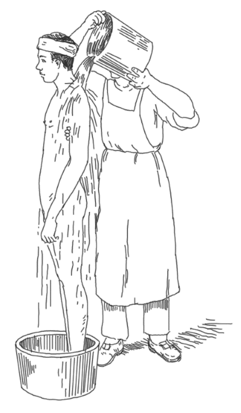
Общее обливание
Обливание затылка производят в лежачем положении, причем у более тяжелых больных голову отводят от подушки в сторону, поворачивают вниз лицом, уши закрывают ватой, после чего небольшой струей воду льют на затылок с высоты 20 см. Постельное белье защищают при этом водонепроницаемой подкладкой.
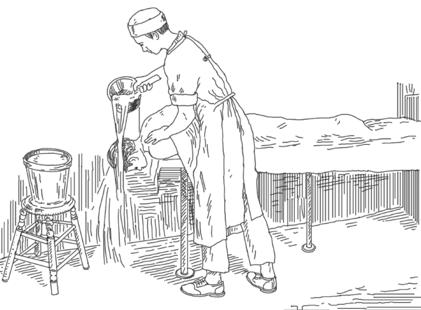
Обливание затылка
Более крепкие больные для обливания затылка ложатся на плоскую кушетку лицом вниз, так чтобы голова несколько свешивалась вниз за ее край; в остальном все делается, как указано выше.
Обливания затылка применяются с хорошим результатом при инфекционных болезнях, особенно у больных с высокой температурой и затемненным сознанием. Обливание спины совершают в сидячем положении больного, причем он усаживается либо на табурете, задние ножки которой могут помещаться в таз, либо на краю ванны спиной к ней.
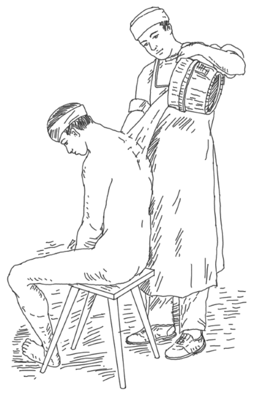
Обливание спины
Если имеется в виду воздействие на весь позвоночник, то струя распределяется в равной мере по всему позвоночнику; при направлении воздействия на тазовые и половые органы больше поливается нижняя его часть, а на органы грудной клетки – верхняя.
Обливание конечностей, особенно нижних, совершается в стоячем положении, причем оно начинается снизу и идет кверху до назначенного места (колена, бедра и др.).
При частичных холодных обливаниях (16–20 °C) обливают лишь затылок с целью улучшения дыхания и кровообращения; руки и ноги – при повышенной потливости, варикозном расширении вен и др.
Обтирания
Обтирание – одна из наиболее часто применяемых гидротерапевтических процедур как во внебольничной обстановке, так и в лечебных учреждениях. Она по существу сводится к незначительному смачиванию кожи водой и одновременному и последующему энергичному ее растиранию, т. е. здесь меньше используется термическое раздражение и больше – механическое.
Обтирания бывают как общие, так и частичные, притом в различных модификациях.
Общие обтирания в наиболее простой форме производятся так: обнаженный больной со смоченным лицом, шеей и грудью становится спиной к проводящему процедуру, который накидывает на него сзади простыню, лучше из более грубой материи, предварительно смоченную в воде определенной температуры. Это делается с таким расчетом, чтобы верхние края простыни покрывали плечи, боковые заходили на переднюю часть туловища, а сама она, спускаясь вниз, охватывала все туловище с верхними и нижними конечностями. Вслед за этим проводящий процедуру начинает усиленно растирать больного через накинутую мокрую простыню.
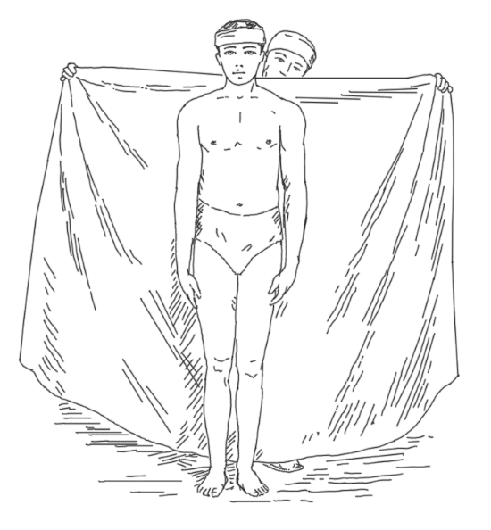
Общее обтирание с набрасыванием простыни
Растирания производятся ладонями рук, плотно приложенными к простыне. При этом делают энергичные и обширные движения вверх и вниз сначала по спине, затем по бокам и наконец простыню обертывают вокруг больного, стоящего с приподнятыми кверху руками, лицом к проводящему процедуры. Последний прикладывает край простыни к правому боку больного, начиная сверху, с подмышечной впадины, ведет ее по передней стороне груди до левой подмышки, после чего больной опускает руки, придерживая таким образом простыню. Далее простыню ведут верхним краем по спине к правому плечу, перебрасывают через плечо снова на переднюю поверхность тела больного, покрывают оба его плеча и закрепляют где-нибудь у шеи больного. При этом простыня, спускаясь вниз, должна плотно охватывать все туловище, руки и ноги; между ногами просовывается ее складка. После этого приступают к растиранию, которое необходимо делать очень энергично, чтобы не допустить переохлаждения.
Иногда после окончания растирания и снятия мокрой простыни добавляют обливание двумя ведрами воды (обычно более низкой температуры). Ноги растирать лучше в сидячем положении пациента.
Иногда для усиления раздражения к растираниям присоединяют похлопывания ладонью по телу больного. Растирания продолжают до полного согревания, что свидетельствует о наступлении хорошей кожной реакции. После этого мокрую простыню удаляют, набрасывают на больного сухую, лучше всего грубую, и снова растирают больного.
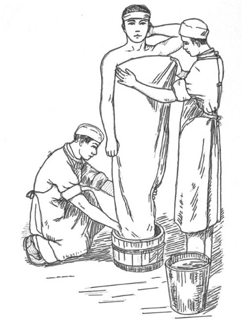
Общее обтирание с завертыванием в простыню
Несколько иная форма общих обтираний, более трудная по технике, но более эффективная, осуществляется обычно двумя лицами, отпускающими процедуру. При этом берется более широкая простыня, смоченная водой повышенной температуры. Реже добавочное обливание делают тотчас после растирания, но еще до снятия мокрой простыни, после чего больного вновь растирают через ту же простыню до нового согревания (так называемая простынная ванна).
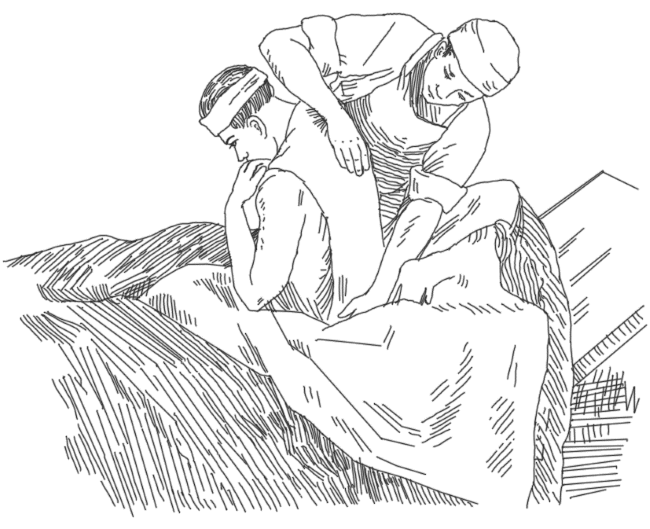
Частичное обтирание спины
У более слабых больных (или очень зябких), особенно в начале лечения, вместо общих делают частичные обтирания, при которых смачивают и растирают не все тело сразу, а по частям. При этом обнаженный больной со смоченными лицом, шеей и грудью ложится на кушетку, накинув на себя простыню или одеяло, а проводящий процедуру, открыв какую-нибудь часть тела, слегка смачивает ее влажным полотенцем, перчаткой или смоченной рукой и затем усиленно растирает сухой мягкой тканью до появления выраженной кожной реакции. Такой последовательной обработкой всех частей тела процедура заканчивается. После этого больной лежа отдыхает, иногда закутанный во что-нибудь теплое, или же делает несколько упражнений и отправляется на прогулку. Частичные растирания можно делать в домашних условиях.
Если необходимо получить более сильное воздействие и речь идет о более крепком больном, то частичные обтирания делают несколько иначе: больной ложится на кушетку и закрывается простыней, а проводящий процедуру, смочив сразу все полотенце и слегка выжав, набрасывает его вдоль вытянутой из-под простыни руки. Больной захватывает в кулак этой руки конец накинутого полотенца, а свободной рукой придерживает у плеча другой конец и таким образом фиксирует его. Проводящий процедуру, плотно обхватив своими ладонями вытянутую руку больного, тщательно растирает ее через это полотенце.
Достигнув достаточного согревания пациента, он сбрасывает еще влажное, но уже теплое полотенце в сосуд, где смачивал его перед обтиранием, и растирает руку больного чем-нибудь сухим до получения хорошей реакции, а затем укрывает простыней. Точно так же проводят обтирания других частей тела.
Температура воды для обтираний берется вначале около 25 °C, а затем ее постепенно понижают. Если холодовое раздражение плохо переносится, то для смягчения реакции добавляют 1–5 столовых ложек водки на стакан воды или 1–3 столовые ложки спирта, одеколона, 1 чайную ложку соли на стакан воды. Изменяя температуру воды, добавляя к ней различные раздражители, меняя степень отжатия полотенца, силу растирания, варьируя, следовательно, степень термического, механического и химического раздражения, почти всегда можно подобрать такую комбинацию их, которая вызовет у больного желательную реакцию.
Обтирание применяется также как тонизирующее, закаливающее средство.
Ванны
Ванны относятся к числу наиболее распространенных водолечебных процедур, при которых тело человека погружается до уровня шеи или частично в воду на определенное время. По объему воздействия различают:
• общие (полные) ванны, когда в воду погружается все тело до уровня шеи;
• поясные или полуванны, в которые погружают только нижнюю половину тела;
• местные (частичные) ванны для конечностей. Ванны могут быть подразделены:
• по объему: общие ванны, когда в воду погружается все тело до шеи, и местные, когда погружается какая-нибудь часть его (тазовые, ножные, ручные, затылочные и т. д.);
• по температуре: холодные (ниже 20 °C), прохладные (20–33 °C), тепловатые индифферентной температуры (34–35 °C), теплые (36–40 °C) и горячие (от 40 °C и выше);
• по продолжительности: кратковременные (1–5 минут), средней продолжительности (15–30 минут), длительные (по нескольку часов) и постоянные (целыми днями);
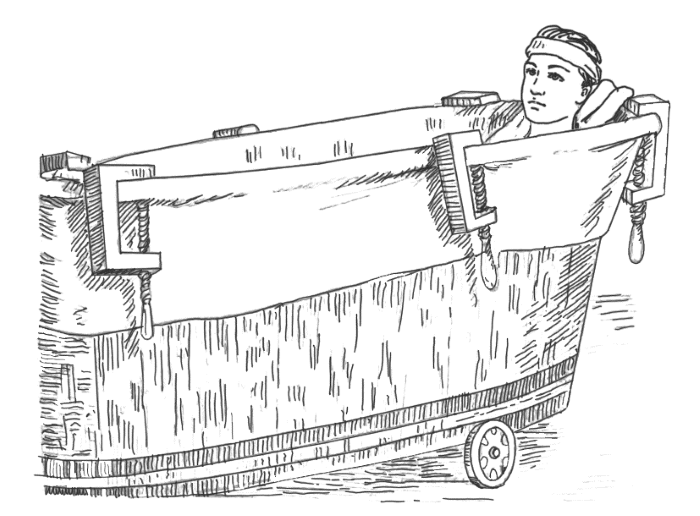
Постоянная ванна упрощенного типа
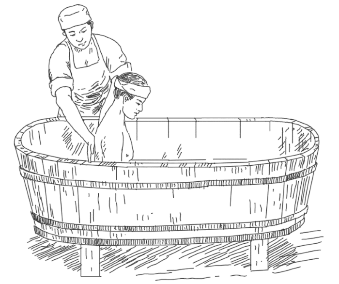
Растирание спины в полуванне
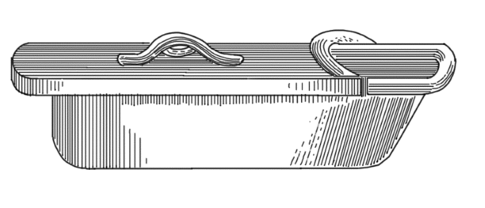
Ручная ванна для одной руки
• по составу: простые (из одной пресной воды) и составные (с прибавлением газов, различных солей, лекарств и т. д.);
• так называемые комбинированные, когда к обычным водяным ваннам присоединяется какой-нибудь другой физиотерапевтический фактор – например, электричество (это будут ванны гидроэлектрические).
Действие водяных ванн на организм обусловливается теми же факторами, что и действие других гидротерапевтических процедур: термическим, химическим и механическим раздражениями. Но в отличие от этих процедур вода в ваннах приходит в соприкосновение с покровами тела в значительно большем количестве и гораздо дольше. Поэтому температурное раздражение в ваннах, особенно при более продолжительном их применении, проявляется значительно выше.
Физиологическое и терапевтическое действие различных ванн может быть неодинаковым, в зависимости от способа их применения (область приложения, интенсивность, продолжительность и т. д.). Так, например, продолжительная общая горячая ванна окажет на организм совсем другое действие, чем кратковременная холодная ножная. Присоединение того или иного механического или химического раздражения в различном количестве и в разных комбинациях может еще больше видоизменить их воздействие на организм.
Общие ванны
Общие водяные ванны чаще всего делают тепловатыми с температурой воды 34–35 °C. Обычно их называют индифферентными, или ваннами индифферентной температуры. Однако от такого названия, очевидно, пора отказаться, потому что эти ванны фактически являются для организма определенным раздражителем, хотя бы уже потому, что не все точки на поверхности тела имеют одинаковую температуру; а кроме того, здесь сказывается действие гидростатического давления. Во всяком случае эти ванны нашли широкое применение не только с гигиенической, но и с лечебной целью.
• Общие ванны продолжительностью 15–30 минут и более при ежедневном приеме оказывают успокаивающее и снотворное действие при возбуждении и повышенной раздражительности. Еще более отчетливо лечебное действие проявляется, если температура ванны на 1–2 °C выше индифферентной; если больной находится в ванне в спокойном состоянии; если после ванны его только слегка обсушить, а не растирать (чтобы избежать раздражения от механического воздействия) и затем на 30–60 минут уложить в теплую постель.
• Общие ванны назначают для успокоения при кожном зуде, парестезиях и различных болевых ощущениях, а также при различных спазмах (в последнем случае, если позволяет состояние больного, лучше назначать ванны с более высокой температурой).
• Общие ванны издавна применяют при заболеваниях почек (нефриты, нефрозы и т. д.) как средство, не только возбуждающее викарную функцию кожи, но и благотворно влияющее на деятельность самой почечной паренхимы. Для этого лучше делать их теплыми (36–37 °C) и продолжительными (1–1,5 часа).
• Такие ванны, только очень большой продолжительности (целыми днями и даже неделями), т. е. так называемые «постоянные ванны» или «водяная постель», можно назначать при поражениях кожи, занимающих обширную площадь. Это будет способствовать отмыванию и удалению с поверхности продуктов распада тканей, микроорганизмов с продуктами их жизнедеятельности или позволит ослабить давление тяжести тела (обширные ожоги, пролежни и т. д.).
Иногда такие ванны назначают при очень резких и распространенных болевых ощущениях (тяжелый распространенный полиневрит). При этом необходимо позаботиться о поддержании температуры воды на одном уровне в течение всей процедуры (постепенное подливание горячей воды, иногда с помощью особых приспособлений), о достаточном обмене воды, чтобы гарантировать ее чистоту, о предохранении ее от загрязнения (приспособления для удобного извлечения больного для отправления естественных потребностей), а также обеспечить больному возможность удобного и спокойного приема процедуры.
• Общие ванны в сочетании с активными и пассивными движениями рекомендуются при ряде нервных, суставных и других заболеваний, где имеются расстройства движений, т. к. в тепловатой воде, благодаря ослаблению болевых ощущений, с одной стороны, и потере веса – с другой, все движения значительно облегчаются.
Общие холодные ванны (с температурой воды ниже 20 °C) делаются обычно трех-пятиминутными. Иногда они ограничиваются одно– или двукратным погружением больного в воду и всегда сопровождаются энергичными движениями или растираниями как во время самой ванны, так и после нее. Такие ванны являются энергично возбуждающим средством и применяются для повышения обмена веществ, особенно у очень полных, но еще достаточно крепких больных.
Менее холодные ванны, скорее – прохладные (около 25–30 °C), рекомендуются как заключительная процедура после утомляющих курсов лечения, а также непосредственно после горячих процедур для охлаждения кожи, прекращения потоотделения, возвращения тонуса расслабленным кожным сосудам. Также они применяются как часть общего курса закаливания при условии постепенного понижения температуры каждой последующей ванны.
Общие горячие ванны с температурой выше 40 °C вызывают усиленную гиперемию кожных покровов, сильно возбуждают сердечно-сосудистую и нервную систему, способствуют задержке тепла в организме, усиливают обмен веществ и ведут к более или менее сильному потоотделению. Они должны иметь продолжительность 5–10 минут (редко – больше), так как в противном случае могут наступить обратные явления: угнетение нервной системы, ослабление сердечной деятельности, общий упадок сил.
Горячие ванны применяются в следующих случаях: как возбуждающее средство – непродолжительные ванны (около 1–1,5 минуты), иногда даже только одно– или двукратное опускание в воду на простыне; при ряде кожных заболеваний (чешуйчатый лишай, разнообразный зуд) – ванны большой продолжительности (в среднем 5–10 минут); как болеутоляющее и ослабляющее спазмы, особенно при заболеваниях брюшной полости; как потогонное при ряде обычных показаний к нему – чаще всего по 5– 10 минут, т. е. только до наступления потоотделения; после этого больного кладут в постель, укутывают одеялом и дают горячее питье.
Общие тепловатые ванны можно назначать даже очень слабым больным. Холодные и горячие ванны переносятся значительно труднее, вызывают у больного сильные реакции и требуют достаточно удовлетворительного состояния сердечно-сосудистой системы. В противном случае они могут повлечь за собой ряд неприятных последствий, особенно при большой продолжительности: холодные – неприятное чувство озноба, так называемый вторичный озноб, резкое последующее возбуждение, а у слабых, кроме того, более значительное расстройство кровообращения, иногда даже шок; горячие ванны вызывают общую слабость, учащение пульса, головокружение, чувство недостатка воздуха и упадок сердечной деятельности. Эти симптомы при продолжении процедуры быстро нарастают, так как являются следствием утомления и истощения регуляторных аппаратов. Поэтому при назначении холодных и горячих ванн необходима большая осмотрительность, при их применении – особенная осторожность, а при появлении первых признаков непереносимости – немедленное их прекращение.
Местные ванны
Из местных ванн заслуживают внимания так называемые сидячие ванны. Точнее, их следовало бы обозначать «тазовые» или «поясничные», так как в воду погружается весь таз, а также поясница, нижняя часть живота и верхняя часть бедер, на что требуется лишь 20–30 л воды. Благодаря своеобразной форме этих ванн больной имеет возможность свободно сидеть, при этом на его голову кладут холодный компресс, ноги опускают в таз с теплой водой или на них надевают туфли; остальные части тела, кроме головы, оставшиеся не погруженными в воду, покрывают одеялом, простыней, чтобы усилить температурное раздражение. В этих ваннах обычно имеются приспособления для усиленного притока и оттока воды, что дает возможность быстро понижать и повышать температуру (или же пропускать с большей или меньшей силой воду желаемой температуры – так называемые проточные ванны).
Сидячие ванны назначают главным образом для местного действия на органы таза и живота. При применении холодных ванн в первый момент в полости таза возникает в большей или меньшей степени уменьшение кровенаполнения, а затем, в силу последовательного расширения сосудов, наблюдается его усиление. При продолжительных теплых ваннах наблюдается только более или менее выраженная гиперемия, при горячих ваннах она бывает более резко выражена.
Сидячие ванны могут с большим успехом применяться при различных заболеваниях в области таза и живота, но пока еще не получили должного распространения. Кратковременные холодные сидячие ванны (15–10 °C), продолжительностью 3–5 минут, назначают при некоторых формах половой слабости, атонии пузыря и кишечника, при геморрое. Тепловатые ванны (34–36 °C) продолжительностью 20–30 минут применяются как улучшающие сон, но чаще как болеуспокаивающее и рассасывающее средство при заболеваниях органов нижней части живота и таза.
Противопоказаниями к сидячим ваннам являются прилив крови к органам малого таза, острые воспалительные процессы (особенно матки и ее придатков), беременность.
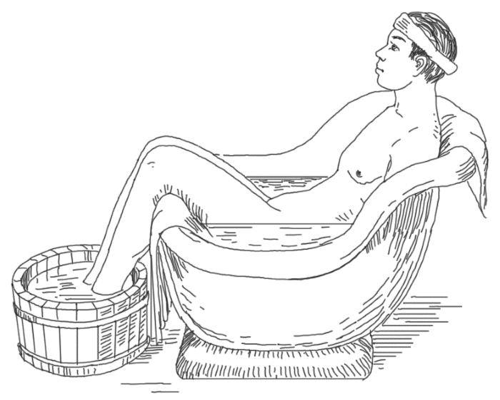
Сидячая ванна
К местным ваннам относятся ванны для конечностей – ручные и ножные.
Их делают либо в специально приспособленных ванночках, либо в простых ведрах (всего на процедуру требуется лишь 10–20 л воды). Действие местных ванн основывается главным образом на температурном раздражении, но к нему очень часто присоединяется еще и механическое (чаще в виде усиленного растирания в самой ванне и после нее или в виде более или менее быстрого тока воды), а нередко – и химическое (добавление в воду горчицы, соли). Применяются эти ванны обычно либо холодными (20 °C и ниже) по 3–5 минут, либо горячими (40 °C и выше) по 10–15 минут, либо переменными. Например, ноги опускаются сначала в горячую воду (40–42 °C) на 30–60 секунд, а затем в холодную (15–10 °C) на 5–10 секунд; так повторяют 3–4 раза и заканчивают процедуру холодной ванной. После ванны следует или только тщательное обсушивание, или энергичное растирание конечностей грубой простыней или полотенцем (особенно после холодных ванн).
Холодные и переменные ванны, особенно ножные, с одновременным усиленным растиранием как во время самой процедуры, так и после нее, применяются чаще при приливах крови к голове, бессоннице, застоях в тазу; реже – как местно действующее средство при потливости конечностей, их зябкости, вазомоторных расстройствах, а также (но уже без растирания) при варикозных расширениях вен и язвах голени.
Горячие местные ванны назначают при остаточных явлениях различных воспалительных процессов и для общего воздействия при различных расстройствах кровообращения: ручные – при заболевании дыхательных органов (например, бронхиальная астма), а ножные – при приливах к голове.
Широко используются местные горячие ванны с постепенно повышающейся температурой – ванны по Гауффе.
Техника их следующая: руки или ноги (или все конечности) опускают в ванночки, температура которых с 37 °C повышается до 42 °C (редко выше) путем постепенного прибавления горячей воды и медленного помешивания (приблизительно в течение 10–15 минут). При появлении выраженного потоотделения температуру воды не повышают, а стараются только поддержать на том же уровне еще около 10–15 минут при условии, что больной это хорошо переносит. При этом он должен находиться по возможности в удобном положении и быть полностью закрыт одеялом (кроме головы). По окончании процедуры, для равномерного и медленного охлаждения разогретого тела, больного укладывают в постель, слегка закутав в одеяло, а затем постепенно раскрывают, на что уходит 20–30 минут. Такие ванны с постепенно повышающейся температурой производят действие, свойственное как местным, так и общим горячим ваннам, но в то же время не ослабляют сердца, а скорее даже стимулируют его. При медленном повышении температуры одновременно с периферическими сосудами расширяются и более глубоко лежащие.
Благодаря согреванию сравнительно небольшого участка кожи и одновременно большому охлаждению (путем испарения пота) перегревания тела не происходит. Эти ванны можно делать в домашних условиях, они легко переносятся и при многих заболеваниях очень эффективны. Их с успехом применяют при гипертонии, в начальной стадии артериосклероза, бессоннице, расстройствах мозгового кровообращения.
Газовые ванны
Газовыми ваннами называются такие, вода которых насыщена газом. Наиболее распространенными во внекурортной обстановке являются углекислые, сероводородные ванны, менее распространены кислородные.
Как известно, вода обладает способностью поглощать газы, особенно при повышении давления, и чем последнее выше, тем больше насыщаемость воды газами. При уменьшении давления поглощенная газообразная составная часть выделяется из воды.
Растворимость газа в воде находится также в прямой зависимости от температуры последней; при этом количество газа, растворенного в воде, тем больше, чем температура ее ниже. Коэффициент растворимости газа в воде (т. е. насыщенность ее газом) и температура воды имеют значение при учете раздражающего действия на организм. Лечебный эффект газовой ванны составляют не только свойства, относящиеся ко всякой ванне данной температуры, но и своеобразное влияние того или иного газа, которым насыщена вода.
Химическое влияние газовой ванны может проявиться двумя путями: или путем всасывания газа через кожу при непосредственном соприкосновении тела с насыщенной газом водой, или через вдыхание выделяющегося газа из ванны. В настоящее время доказана возможность проникновения в тело человека через кожу газообразных веществ, растворенных в воде.
Углекислые ванны могут быть приготовлены различными способами.
• Углекислоту образуют в самой ванне из химических соединений. Для этого сначала в ванну необходимой температуры насыпают на дно равномерным слоем двууглекислую соду и затем добавляют разведенную соляную кислоту (на обычную ванну емкостью 200 л необходимо 625 г двууглекислого натрия и 800 см технической соляной кислоты удельного веса 1,14; последнюю предварительно разводят в 2–3 раза водой, наливают в большой стеклянный сосуд, который ставят на 1 м выше ванны, и оттуда пропускают через мелкие отверстия резиновой трубки, одним концом положенной на дно ванны. После этого больной погружается в воду.
• Для приготовления углекислой ванны можно воспользоваться и другим рецептом (Чекин): на 200 л воды берут 1 кг углекислого натрия (соды) и 2,5 кг кислого сернокислого натрия (NaHS0).
Рассыпанный по дну ванны кислый сернокислый натрий обливают горячей водой до растворения комков и доливают в ванну холодную воду. После этого равномерно высыпают на поверхность воды соду и через 5 минут усаживают больного в ванну.
• Часто, особенно при применении углекислой ванны на дому, поступают так: на дно ванны с растворенной содой кладут имеющиеся в продаже плитки определенного химического состава, которые постепенно растворяются; переходящие при этом в водную массу химические вещества вступают во взаимодействие с содой, растворенной в ванне, и таким образом постепенно образуется углекислота, которая насыщает воду.
• Предварительно в течение 20 минут насыщают углекислотой холодную водопроводную воду в особых аппаратах под давлением приблизительно 1,5–2 атм и затем добавляют эту насыщенную воду к обычной воде температуры 65–70 °C, заранее налитой в ванну. Этот способ, особенно при применении так называемых колонок, является наилучшим для приготовления углекислых ванн, так как дает лучшее насыщение воды углекислотой, для лечебных целей вполне достаточное, и тем самым приближает эти ванны к естественным.
Поверхность кожи больного, помещенного в хорошо приготовленную углекислую ванну, быстро покрывается массой очень мелких пузырьков газа, которые постепенно увеличиваются в размере; достигнув определенной величины, они отрываются от кожи, и на их месте тотчас же образуются новые. Вследствие того, что с кожей соприкасается то пузырек газа, то частица воды, возникает действие термического контраста, потому что при этом проявляется различное температурное раздражение в силу различной теплоемкости газового пузырька и частицы воды. Кроме того, углекислота и сама по себе, приходя в непосредственное соприкосновение с кожей, оказывает химическое действие на ее нервные окончания.
Больной вскоре после погружения в углекислую ванну ощущает легкое пощипывание и согревание кожи. Кожная чувствительность при этом видоизменяется: тактильное чувство повышается, а восприятие к холоду понижается. Вместе с тем появляется более или менее резкая гиперемия кожи в силу активного расширения капилляров и мелких сосудов (более крупные сосуды остаются при этом суженными). Наконец, из выделяющихся в ванне пузырьков углекислоты вокруг тела образуется особый изолирующий слой вроде пены, благодаря чему в значительной степени нарушается обычный для ванны теплообмен между водой и телом больного.
Некоторое значение при применении углекислых ванн может иметь увеличенное накопление в организме углекислоты, которая, с одной стороны, всасывается через кожу, с другой – задерживается в ней в связи с повышенным насыщением окружающей среды и, наконец, отчасти поступает в организм через органы дыхания. Однако слишком большое накопление углекислоты в организме может оказывать вредное действие. Поэтому необходимо позаботиться об усиленном проветривании помещений, где принимаются углекислые ванны, а также предохранять больного от вдыхания углекислоты, которая скапливается непосредственно над поверхностью воды (держать голову больного выше краев ванны; покрывать ванну простыней).
Некоторую роль играет и содержание в воде минеральных солей (особенно солей кальция).
Углекислые ванны по своему действию в значительной степени отличаются от действия водяных ванн такой же температуры. Так, при углекислой ванне уже при температуре 35 °C отмечается расширение кожных капилляров и незначительное понижение кровяного давления (впрочем, в некоторых случаях наблюдается его повышение; эффект влияния на кровяное давление может зависеть от его исходного состояния), урежение числа ударов сердца, а вместе с тем нередко и увеличение количества крови, выбрасываемой в аорту с каждым сокращением сердца, а также усиленное продвижение крови благодаря более глубокому дыханию. Таким образом, в целом кровообращение улучшается, тогда как работа самого сердца не только не затрудняется, а скорее даже облегчается.
При более низкой температуре (это становится заметным уже при 30 °C) кровяное давление немного повышается, а сердце выполняет даже несколько большую работу, но она производится при более благоприятных условиях, так как, благодаря удлиненной диастоле, сердце будет больше отдыхать и лучше питаться. Затем, благодаря расширению сосудов и сохранению их тонуса, периферическое сердце будет облегчать работу центрального. Кроме того, ванны оказывают благоприятное воздействие на нервную систему.
Способ применения углекислых ванн при сердечных заболеваниях состоит в следующем. Перед началом курса лечения больной подвергается некоторой подготовке: дается несколько пресных, а затем соляно-щелочных ванн; после того как убедятся в их хорошей переносимости, переходят к углекислым ваннам. Первые ванны делают неполного насыщения (в 1 –2 раза слабее обычного максимального), т. е. такого, при котором тело быстро и сплошь покрывается очень мелкими пузырьками. Затем довольно быстро (через 2–3 ванны) доводят насыщение до полного. Начинают процедуры с температуры 34–35 °C и постепенно понижают ее (приблизительно через каждые три ванны на 1 °C и так до 30 °C). Продолжительность процедуры в начале курса – 10 минут, постепенно доводят ее до 15 минут.
Применяется такая схема: 2 ванны неполного насыщения (35 °C) продолжительностью 8–10 и 12 минут, затем полного насыщения: 35 °C – 10, 12 и 15 минут, 34 °C – 10, 12 и 15 минут; 33 °C – 10, 12 и 15 минут и т. д.
Углекислые ванны делают через день. При хорошей переносимости у более крепких больных иногда ванны назначают по два дня подряд с суточным перерывом. Полный курс лечения – 12–20 ванн (редко – больше). Непосредственно перед принятием углекислой ванны больной должен хорошо отдохнуть. В самой ванне он должен лежать спокойно, избегая движений и мышечного напряжения. Тотчас после ванны рекомендуется полчаса отдохнуть, а затем, не спеша одевшись, отправиться домой, при этом нужно избегать физических напряжений и длительных прогулок. Нельзя принимать ванны как натощак, так и при переполненном желудке; не нужно также есть сразу же после приема ванн. Как температуру, так и продолжительность углекислых ванн нужно устанавливать в зависимости от их переносимости и при малейшем недомогании больного делать перерыв. Во время всего курса необходимо строго соблюдать назначенную диету, рекомендованный режим для сердечного больного, избегать утомления.
В связи с тем, что углекислые ванны (35 °C) улучшают кровообращение при одновременном облегчении сердечной деятельности, они получили широкое применение у больных с наличием незначительной сердечной недостаточности, в нерезко выраженных случаях гипертонии и при недалеко зашедшем артериосклерозе. Более прохладные и насыщенные углекислые ванны производят возбуждающее действие, поэтому применяются (кратковременные) при неврозах с депрессивными явлениями. Освежающее, ободряющее действие более слабых углекислых ванн и тонизирующее влияние на сердечнососудистую и нервную системы делает их применимыми для выздоравливающих больных.
Углекислые ванны не должны быть применены при явлениях расстройства компенсации даже в тех случаях, когда эти расстройства хотя слабо выражены, но заметно нарастают. Такие ванны противопоказаны также при эндокардитах, аневризмах, приступах грудной жабы, значительном повышении кровяного давления, наклонностях к кровотечениям, при состояниях значительного возбуждения, беременности свыше 6 месяцев, а также при туберкулезе, особенно легочном.
Кислородные ванны. Способ их приготовления такой же, как и углекислых, но насыщение воды кислородом гораздо слабее, чем углекислотой, и потому выделение таких обильных пузырьков газа на коже уже не отмечается. Не наблюдается также и покраснения кожи, так как кислород сам по себе почти не раздражает ее.
Эти ванны оказывают благотворное влияние на кровообращение, сравнимое с углекислыми ваннами, но гораздо более слабое, всегда сопровождающееся понижением кровяного давления. Кроме того, в отличие от углекислых, они не возбуждают, а успокаивают нервную систему.
Методика их применения очень проста: температура – 35–34 °C (редко – 30 °C), продолжительность – 15–20 и даже 25 минут, повторяемость – через день или по 2–3 дня подряд; всего 20–25 ванн на курс лечения.
Кислородные ванны чаще всего применяются при заболеваниях сосудов (при незначительном ослаблении сердечной деятельности, артериосклерозе, гипертонии и сердечных неврозах), при климактерических явлениях, базедовой болезни, а также при некоторых инфекционных заболеваниях в периоде реконвалесценции как легкое тонизирующее. Противопоказаний к ним нет, как и при тепловатых ваннах.
Сероводородные ванны. В природных сульфидных водах содержатся в растворенном состоянии сероводород, углекислота и нередко – метан; кроме того, там растворены сульфиды щелочных и щелочноземельных металлов. Главной действующей лечебной составной частью этих вод является сероводород (свободный). Применение искусственных сероводородных вод во внекурортной обстановке все шире вводится во врачебную практику и оправдывается получаемым лечебным эффектом.
Для приготовления искусственной сульфидной воды и ее лечебного использования необходимо провести подготовительную работу. Для того чтобы гарантировать получение искусственной сульфидной воды соответствующего химического состава, необходимо сделать химический анализ входящих в нее химикалий, а также воды источника, из которой ее добывают. Известно, что количество свободного сероводорода в воде находится в зависимости от количества содержащейся в ней углекислоты (так называемое сульфидно-карбонатное равновесие) и от общей щелочности. Таким образом, хотя и существуют выработанные рецепты для приготовления искусственных сероводородных ванн, тем не менее химический состав их воды, даже строго соответствующий рецепту, может оказаться всякий раз различным вследствие того, что используемые химические технические продукты не всегда являются одинаковыми. К тому же состав воды того источника, из которой приготовляется ванна, в различных местностях неодинаков (например, по щелочности) и может значительно измениться в зависимости от метеорологических условий.
Для получения аналога сульфидной воды в лечебной практике принято пользоваться способом вытеснения свободного сероводорода и углекислоты из содержащих их солей с помощью воздействия более сильными кислотами. В выработке рецептов для приготовления искусственных сульфидных вод первая заслуга принадлежит химику Палею. Одним из самых простых рецептов для приготовления искусственных сероводородных ванн типа естественных мацестинских является следующий: на 200 л нагретой до необходимой температуры воды наливают 825 см 10 %-ного раствора технического сернистого натрия и 200 см технической 27,5 %-ной соляной кислоты (соответствует ее удельному весу 1,14); 1 л воды приготовленной по такому рецепту ванны будет содержать около 100 мг свободного сероводорода и около 150 мг общего. Искусственная сульфидная вода применяется и в концентрации, достигающей 200 мг/л свободного сероводорода (типа натуральной воды Талги). Результаты лечебного воздействия таких ванн близки по эффекту к естественным мацестинским.
Для более сложного рецепта, значительно приближающего воду к натуральной сероводородной, необходимы следующие растворы: раствор сернистого натрия, раствор соляной кислоты, раствор бикарбоната натрия. На ванну емкостью 200 л надо брать 1 л раствора сернистого натрия, 0,5 л раствора соляной кислоты и 1 л раствора бикарбоната натрия.
Раствор сернистого натрия, вследствие легкого окисления, готовят только на 2–3 дня и хранят в закрытом шкафу. Он является сильной щелочью и может при неосторожном обращении причинить ожоги.
Для того чтобы объем воды в ванне каждый раз был одинаковым, на ней делают на определенном уровне отметку, до которой наливают воду; затем последовательно наливают, тщательно помешивая деревянной мешалкой-веслом, раствор соды, соляной кислоты и сернистого натрия. Приготовленная таким способом вода имеет запах сероводорода, светло-зеленый цвет и абсолютную прозрачность; в таком виде она может применяться для лечебных целей.
По концентрации сероводорода ванны разделяют на слабые с содержанием общего (свободного и связанного) сероводорода до 70 мг на 1 л, средней концентрации – от 80 до 100 мг и крепкие – выше 100 мг.
Продолжительность, температура ванн и степень насыщения воды сероводородом могут комбинироваться различно, в зависимости от формы заболевания, переносимости ванн и задач, стоящих перед врачом. Метод применения сероводородных ванн может быть интенсивным, когда применяется вода средней или крепкой степени насыщения при температуре 33 °C, с постепенным переходом к 37 °C, продолжительностью от 8 до 15 минут, с чередованием сначала через день, затем 2–3 дня подряд и один день перерыв; общее число ванн от 14 до 18–20.
Облегченный метод характеризуется либо уменьшением продолжительности ванн той же концентрации и общего количества ванн, чередующихся через день, либо уменьшением насыщения воды сероводородом (до 45–50 мг на 1 л) и укорочением продолжительности ванны от 5 до 10 минут, а также уменьшением общего количества ванн до 12–14. Для сердечных больных температуру воды постепенно понижают до 32–30 °C и проводят процедуру облегченным методом. У больных с поражением суставов нередко повышают температуру воды до 38 °C и при отсутствии противопоказаний со стороны органов кровообращения применяют интенсивный метод.
Чтобы приготовить искусственную сероводородную ванну более слабой концентрации из воды концентрации 100 мг на 1 л воды, ее можно разбавлять.
Если при приготовлении или разбавлении сульфидной воды она становится мутной, это может объясняться недостаточной щелочностью воды источника и может быть устранено добавлением раствора бикарбоната натрия. Надо следить за аккуратным отмериванием персоналом объемов химических растворов, необходимых для приготовления назначенной концентрации воды, а также за тщательным размешиванием ее и строгой последовательностью при добавлении.
Вода в ванне не должна закрывать верхней части груди лежащего в ней человека. Он садится в ванну сразу же после ее размешивания. После каждой ванны больному необходим отдых в лежачем положении не менее получаса.
Исследования показали, что действие искусственных сероводородных ванн при правильной технике их приготовления и применения, а также при правильном составе, мало чем отличается от натуральных.
Действие этих ванн обусловливается главным образом наличием свободного и полусвязанного сероводорода – этого сильного раздражителя, который не только оказывает сильное воздействие на кожу, но, проникая в организм через кожу и вместе с вдыхаемым воздухом, в свою очередь вызывает в нем ряд сложных явлений. Проникающий в кожу сероводород вызывает в ней образование гистаминоподобных веществ, присоединяющих свое влияние к местному воздействию сероводорода, также обусловливающих вторичное общее влияние через кровь и нервную систему на реактивность тканей и целых систем организма. Под влиянием воды, содержащей уже 40–50 мг/л сероводорода, появляется своеобразная реакция покровов – покраснение кожи, резко ограниченное уровнем воды. Чем выше концентрация сероводорода и температура воды, тем быстрее наступает покраснение; оно исчезает через 1–2 минуты после выхода больного из ванны. Вместе с покраснением кожи даже в прохладной ванне у больного появляется ощущение тепла. Сероводород, поступающий в кровь через кожу и дыхание, претерпевает в организме сложный цикл химических изменений и выделяется из него в виде продуктов окисления серы.
Такой эффект обусловливается расширением венозной сети и самих капилляров кожи, ток крови в которых ускоряется. Обнаружено, что параллельно с расширением капилляров в коже и изменением в них кровообращения наступают такие же изменения и в капиллярной сети внутренних органов и мускулатуры тела. Расширение капилляров кожи на большой поверхности тела, несомненно, вызывает изменения динамики всего кровообращения: так, отмечено замедление ритма сокращений сердца (особенно при ваннах температуры 30–32 °C), повышенное кровяное давление снижается на 10–15 мм рт. ст. после единичной ванны; при пониженном давлении может наблюдаться его повышение.
Влиянием проникшего в организм сероводорода ученые частично объясняют удлинение диастолы и увеличение диастолического наполнения сердца, которое наблюдается при применении сероводородных ванн. При этом сердце изменяет весь режим своей работы, и в условиях пониженного артериального давления и увеличенного диастолического наполнения его полостей работа его проходит с большим полезным эффектом.
Благоприятное воздействие на гемодинамику, стимуляция обмена веществ лежат в основе действия сероводородных ванн при сердечно-сосудистых заболеваниях. Дозировка концентрации сероводорода, продолжительности ванны и ее температуры для сердечных больных имеет особенно важное значение. Со стороны крови под действием курса ванн наблюдается повышение количества гемоглобина и возвращение к норме белой крови параллельно с улучшением болезненного процесса.
Сероводород естественных и искусственных ванн, проникая в организм, принимает участие в серном обмене. Сера, являясь составной частью клеточной субстанции белковых веществ, играет значительную роль в окислительных процессах. Воздействуя на обмен веществ, сероводород способствует также повышению выделения мочевой кислоты и мочевины в моче, увеличению выделения аммиака, а усиливая окислительные процессы, повышает газообмен. Таким образом, при нарушении обмена веществ, когда необходимо стимулировать окислительные процессы в организме и усилить выделение мочекислых солей, сероводородные ванны оказывают хороший лечебный эффект.
Искусственные и естественные сероводородные ванны действуют стимулирующим образом на регенеративные процессы, влияя на процессы обмена, вызывая улучшение кровообращения, активируя функцию ретикуло-эндотелиальной системы и оказывая регулирующее влияние на функции вегетативной нервной системы. Под влиянием этих ванн ускоряется заживление ран, срастание переломов, рассасывание гематом и воспалительных инфильтратов и стимулируется регенерация нервной ткани.
В результате действия сероводородных ванн наблюдается следующее: функциональное изменение сосудов; изменение крови; изменение в самой протоплазме тканевых клеток; перестройка нейрогуморальных соотношений.
Клинически это выражается явлениями со стороны сердечно-сосудистой системы, близкими к наступающим после углекислых ванн (расширение кожных и более глубоких капилляров и мелких артерий, замедление пульса, количества выбрасываемой на периферию крови, понижение кровяного давления), и кроме того, заметным усилением окислительных процессов в организме, повышением обмена веществ и стимулированием формативной и регенеративной деятельности клеток как в самой коже (излечение различных кожных заболеваний, заживление язв различного происхождения), так и в других тканях (например, для восстановления перерезанных нервов).
Терапевтическое применение:
• нарушение кровообращения в виде поражения как самого сердца, так и сосудов;
• ревматические и другие поражения органов движения, особенно суставов;
• хронические воспалительные процессы, особенно при различных гинекологических заболеваниях;
• язвы и другие заболевания кожи (псориаз, экзема);
• некоторые заболевания периферической нервной системы (невриты).
Особенно применимы сероводородные ванны там, где расстройство сердечно-сосудистой системы комбинируется с поражением суставов или нарушением обмена.
Режим больного во время курса сероводородных ванн схож с режимом при углекислых ваннах.
Противопоказаниями к применению сероводородных ванн являются острые воспалительные процессы, туберкулез висцеральный и костный, болезни почек, печени и желчных путей, гипертоническая болезнь с явлениями нарушения мозгового и коронарного кровообращения, стенокардия, значительные расстройства кровообращения с явлениями недостаточности первой (относительное противопоказание) и второй степени, острые и подострые эндокардиты и миокардиты, бронхиальная астма, геморрой и повышенная нервная возбудимость.
Для проведения сероводородных ванн необходимы соответствующее помещение и оборудование как для приготовления растворов – реактивов, так и для отпуска ванн. В связи с легкой диффузией сероводорода в воздухе и неприятным запахом, помещение для сероводородных ванн должно быть изолировано и иметь самостоятельную вентиляцию, обеспечивающую предохранение соседних частей лечебного заведения от загрязнения воздуха, а также скопления сероводорода в высоких концентрациях. Необходимо предохранять металлические предметы оборудования от разрушающего действия сероводорода, помещения и предметы оборудования должны быть покрашены такими красками или облицованы материалами, которые не портятся от действия сероводорода. Канализационная система для сероводородной воды должна иметь специальный отстойник.
Воздушно-газовые ванны. Натуральная вода целебных терм курорта Цхалтубо характеризуется содержанием ничтожного количества минеральных составных частей и весьма незначительной радиоактивностью, наряду с содержанием большого количества азота, который при приеме ванн выделяется на коже больного в виде мельчайших пузырьков, оказывающих очень легкое раздражение. В результате воздействия вод Цхалтубо, в противоположность влиянию углекислой воды, кожа бледнеет, на ней проявляется сосудосуживающее действие. Терапевтическое действие этих вод объясняется главным образом наличием в них большого количества азота.
Ученые предложили для лечебного применения в качестве аналога вод Цхалтубо так называемые воздушно-азотные ванны. Из баллона со сжатым воздухом под давлением 2–2,5 атм вода насыщается воздухом через такую же колонку, которая применяется для насыщения воды углекислотой. В насыщенной воздухом воде содержится до 83 % азота, 15,7 % кислорода, а также некоторая примесь углекислоты (1–2,6 %). То есть воздушно-газовая ванна является преимущественно азотно-газовой.
Как и при цхалтубских ваннах, кожа больного в воздушно-газовой ванне (35 °C) продолжительностью 20 минут становится бледной, а красный дермографизм проявляется менее ярко. Такая кожная реакция возникает, по данным капилляроскопии, за счет резкого сокращения капилляров кожи. Спазм капилляров продолжается после ванны в течение 20–60 минут, после чего наступают нерезко выраженная гиперемия и ускорение кровотока.
Характер кожно-сосудистой реакции, а также (в большинстве случаев) повышение сахара в крови, урежение пульса и дыхания, незначительное понижение кровяного давления, наблюдаемые после единичных воздушно-газовых ванн, дают основание предполагать влияние и на вегетативную нервную систему. Большинство больных отмечает в ванне температуры 35–36 °C ощущение легкого и приятного тепла, бодрости и легкости. Тело больного при хорошем насыщении воды воздухом покрывается слоем газовых пузырьков в виде инея, которые труднее отрываются от тела, чем пузырьки углекислоты и сероводорода.
Процедуры проводятся ежедневно или через день при температуре 35–36 °C, продолжительность их 20 минут; общее число ванн – 20–30. Воздушно-газовые ванны показаны при нерезко выраженной форме гипертонической болезни, нарушениях обмена, ревматических и инфекционных артритах.
Азотные ванны. В некоторых лечебницах для бальнеологических целей используют естественные и искусственные азотные воды. Азот – бесцветный газ с атомной массой 14, не имеющий запаха, плохо растворяется в воде. В воздухе его содержится 75,6 % по массе и 76,09 % по объему. Очень малые его количества содержатся в речной, морской и океанической водах. В водах, выходящих из глубоких скважин, количество азота может быть повышено, так как он находится под большим давлением. Азотная вода, выходящая на поверхность земли, быстро выделяет пузырьки газа, что можно, например, наблюдать в водах Цхалтубо (являющихся азотно-радоновыми).
Естественные азотные воды маломинерализованы (около 2 г/л солей), обладают слабощелочной реакцией, содержат в повышенных количествах кремниевую кислоту и ее соединения, иногда они слаборадиоактивные. Их применяют в основном в виде ванн. Концентрация азота в различных водах колеблется от 20 до 30 мг/л.
Азотные ванны обладают слабым вторичным сосудорасширяющим действием, несколько улучшают периферический кровоток, оказывают благоприятное воздействие на сердечную деятельность, урежая ее и увеличивая ударный объем сердца. При их применении несколько снижается артериальное давление. Они обладают седативным эффектом и слабым обезболивающим действием. Отмечено их нормализующее воздействие на обменные процессы и систему свертывания крови, овариально-менструальную функцию у женщин.
Почти все больные хорошо переносят эту процедуру. Ее продолжительность – 10–12 минут (в бассейнах Цхал-тубо – до 40 минут), температура воды – 35–36 °C. Чаще процедуры назначают ежедневно, на курс – до 20 ванн.
Показания к применению азотных ванн:
• заболевания сердечно-сосудистой системы (гипертоническая болезнь І и ІІА стадий, вегетативно-сосудистая дистония, облитерирующие заболевания периферических сосудов);
• заболевания опорно-двигательного аппарата (полиартриты инфекционного и дисметаболического генеза, артрит посттравматический, миозит);
• заболевания нервной системы (неврозы и неврозо-подобные состояния – в частности, неврастения в ги-перстенической фазе; радикулит, преимущественно легкая форма; акро– ангиотрофоневроз; состояния после преходящих нарушений мозгового кровообращения – через 2–2,5 месяца после острого периода);
• гинекологические заболевания (хронические воспалительные процессы, функциональные заболевания женских половых органов, сопровождающиеся аменореей, олигодисменореей, ранний климакс).
Противопоказания – общие для бальнеотерапии.
Курорты с естественными азотно-термальными водами (азотно-кремнистыми): Арасан-Капал, Горячинск, Джалал-Абад, Кармадон, Кульдур, Нальчик, Талая, Циаши, Шаам-бары и др. Искусственные азотные ванны готовят с помощью специальных устройств – киферов. Принимают также азотно-радоновые ванны, которые готовят, как и кислородно-радоновые.
Минеральные ванны
Из искусственных минеральных ванн (которые, уподобляясь по своему составу естественным, очевидно, могут
быть очень разнообразными) в обычной практике применяются только соляные, щелочные и щелочно-соляные.
Соляные ванны. Получаются при прибавлении к обычной пресной воде обыкновенной морской или простой неочищенной соли до 3–6 и даже 9 кг на ванну объемом 300 л. Делают эти ванны обычной температуры – 36–34 °C. Однако при заболеваниях суставов или необходимости получить успокаивающее действие назначают более теплые ванны (37–38 °C); продолжительность их 15–20 минут, повторять можно через день и даже чаще, на курс – 30–40 ванн.
Некоторые особенности действия этих ванн в сравнении с водяными основываются:
• на изменении процесса теплообмена между телом и ванной (здесь отмечается замедление теплоотдачи телом);
• на раздражении кожных покровов солями, содержащимися в ванне.
Кроме того, вследствие проникновения растворов солей в эпидермис и их выкристаллизовывания как на поверхности, так и в складках, морщинах кожи и устьях желез, это раздражение держится долгое время и после прекращения ванны, нередко даже в том случае, если больной после минеральной ванны обливался простой водой.
Это обусловливает некоторое ограничение испарения воды и отдачи тепла кожей, а также, что особенно важно, более обильное и продолжительное ее кровенаполнение. В конечном итоге действие соляных ванн отличается от действия простых водяных той же температуры и той же продолжительности главным образом более сильным влиянием на обмен веществ и на сосудистую систему. Иногда для воздействия при функциональных расстройствах нервной системы у больных, пользующихся соляными ваннами, к ним добавляют хвойный экстракт или порошок (соляно-хвойные ванны).
Щелочные ванны готовят, добавляя на ванну 300–600 г неочищенной соды или половину этого количества сырого поташа. Они размягчают роговой слой кожного эпителия, омыляют жиры кожи, увеличивают диурез и действуют несколько возбуждающе на нервную систему. Часто употребляются в виде соляно-щелочных ванн, методика и показания к которым подобны простым соляным.
Радоновые ванны. Многие природные минеральные воды обладают радиоактивностью. Наличие ее в сочетании с другими ингредиентами играет роль в механизме лечебного действия этих вод. Приготовление радоновых ванн и дозировка в них радона являются предметом специальной техники. Радон – это благородный газ, образующийся из радия; будучи растворенным в воде, радон беспрерывно распадается с образованием малоустойчивого радия А, который в свою очередь дает продукты распада. Лечебное действие радона проявляется благодаря излучениям, которые возникают в ванне вследствие появления в ней радиоэлементов – продукта распада радона.
Доказано, что радон может диффундировать через кожу в кровь больного, а также проникать в организм с вдыхаемым воздухом, в который он распространяется из ванны. Радон и образующиеся продукты его распада излучают альфа– и бета-лучи, действию которых подвергаются тканевые элементы. Лучи бета способны проникать через ткани, где они, теряя свою энергию, могут вызвать коагуляцию положительных коллоидов или перемещение и изменение концентрации различных ионов.
Радон и продукты его распада абсорбируются также поверхностью кожи больного, находящегося в ванне, образуя на ней плотно удерживающийся в течение 2 часов и более так называемый активный налет, который также излучает упомянутые лучи. Воздействию этих излучений на коже и в тканях организма приписывают лечебное действие радоновых ванн. Количество радиоактивных веществ, количество радона и продуктов его распада, составляющие активный налет, и тем самым интенсивность излучений, которым подвергается кожа в самой ванне и продолжительное время после нее, зависят не только от количества радона в ванне, но и от ряда условий техники отпуска ванны, обширности поверхности кожи, соприкасающейся с водой, движения в ванне больного и др.
Под влиянием радоновой ванны у лежащего в ванне больного возникает побледнение кожи, при этом установлено понижение плетизмографической кривой; это понижение держится и спустя 45 минут после выхода его
из ванны. Степень понижения находится в связи с концентрацией в воде радона. Бальнеологическое обострение при применении радоновых ванн характеризуется резким симпатическим эффектом. У больных полиартритом, сопровождающимся миокардиодистрофией, радоновые ванны ведут к побледнению фона капилляро-скопической картины на коже, уменьшению длины и ширины капилляров, ускорению кровотока и уменьшению стаза.
Сужение периферической сосудистой системы влечет перераспределение крови в организме и изменение сердечно-сосудистой деятельности. Имеются сведения о седативном действии радоновых ванн.
Лекарственные ванны
Из лекарственных ванн (т. е. с прибавлением того или другого лекарственного вещества) чаще всего применяются так называемые сосновые или хвойные ванны, или ароматичные. Для приготовления их берут заранее приготовленный жидкий экстракт из игл, шишек и ветвей сосновых или хвойных деревьев или же хвойный порошок с флюоресцином, придающим воде приятное окрашивание с зеленоватой флюоресценцией; можно пользоваться также простым отваром из свежесобранных сосновых ветвей.
Рецепт хвойного порошка: 10 кг размельченной поваренной или морской соли, 5 кг кальцинированной соды (предварительно тщательно перемешивают), по 150 г денатурированного и нашатырного спирта (хорошо смешать с солью; они являются закрепителями ароматических веществ), 50 г хвойного масла (еловое, пихтовое, можжевеловое), 50 г эвкалиптового масла, 50 г очищенного скипидара, 15 г флюоресцина.
Во многих случаях можно обходиться более упрощенной смесью, состоящей из соли, какого-либо хвойного масла и флюоресцина.
Ароматические ванны. В этих ваннах, кроме освежающего запаха, имеет значение раздражение кожи ароматическими веществами. Во всяком случае они приятны для больных, хорошо ими переносятся и на многих из них оказывают обычно более успокаивающее действие, чем простые водяные ванны. Методика их применения такая же, как и общих водяных тепловатых ванн.
Горчичные ванны. Для приготовления горчичных ванн на общую ванну берут 250–500 г обычной горчицы в порошке, тщательно размешивают в теплой воде до появления выраженного запаха горчичного масла и затем либо опускают в мешочках из пропускающей воду материи в ванну, либо просто размешивают в ней. Вместо этого можно к ванне прибавить 200–300 мл горчичного спирта (для местной горчичной ванны берется соответственно меньшее количество). После такой ванны (обычно в 35–38 °C, местные – теплее; продолжительность – 5–10 минут) больной обливается теплой водой и закутывается в одеяло. Эти ванны вызывают сильное раздражение кожных покровов, что сказывается в быстром наступлении ясно выраженной гиперемии. Ванны вызывают повышение обмена и оказывают сильное отвлекающее действие.
Общие горчичные ванны применяются редко и почти исключительно в детской практике (при некоторых инфекционных заболеваниях, при капиллярном бронхите). Местные (как ручные, так и ножные) – гораздо чаще (например, при приступах стенокардии).
Хвойные ванны. Их готовят путем добавления порошкообразного (50–70 г) или жидкого хвойного экстракта (100 мл). Промышленность выпускает также хвойные таблетки, которые добавляют в ванну (по таблетки). Аромат хвои оказывает успокаивающее действие, что делает эти ванны полезными при неврозах. Температура воды – 35–37 °C, длительность процедуры – 10–15 минут. На курс – 10–15 процедур.
Шалфейные ванны. Приготавливают, растворяя в воде сгущенный конденсат мускатного шалфея в количестве 250–300 мл. Эти ванны оказывают обезболивающее и успокаивающее действие. Их продолжительность – 8– 15 минут, температура воды – 35–37 °C, периодичность – 2–3 раза в неделю. На курс – 12–15 процедур. Применяют при заболеваниях и травмах костно-мышечной и нервной системы.
Жемчужные ванны. Воздействующей средой является вода с множеством пузырьков воздуха, образуемых тонкими металлическими трубками с отверстиями, куда воздух поступает под давлением. Такое бурление воды оказывает на кожу больного механическое действие. Ванны показаны при функциональных расстройствах нервной системы, общем утомлении, при гипертонической болезни 1 стадии. Продолжительность процедуры – 10–15 минут, ежедневно или через день. На курс – 12–15 процедур.
Ванны с настоем сена. Это успокаивающие ванны, которые обладают свойством снимать нервное напряжение у больных гипертиреозом, нервными сердцебиениями, бессонницей, хореей, склерозом, отеком Квинке.
Ванны с настоем листьев грецкого ореха. Их рекомендуют при мокнущих кожных болезнях: пемфигусе, мокнущей экземе, пруритусе, крапивной лихорадке и т. п. Залить кипящей водой 500 г листьев грецкого ореха, дать настояться 15 минут. Процедить и вылить настой в ванну при температуре 38,5 °C. Принимать ванну в течение 15 минут.
Ванны типа Рош-Позе. Назначают при сухости кожи, сухих дерматитах, ихтиозе, псориазе. Карбонат соды – 35 г, карбонат магнезии – 20 г, перборат магния – 15 г; все смешать и вылить в ванну при температуре 38–39 °C. Принимать ванну в течение 15 минут.
Шунгитовые ванны. С их помощью излечиваются многие кожные заболевания: дерматиты, экземы, псориаз и др. Особенно эффективны теплые шунгитовые ванны. Для их приготовления готовится шунгитовая пыль. Применяются для общего оздоровления организма человека, повышения жизненного тонуса, энергетической подпитки организма. Шунгитовые ванны способствуют лечению заболеваний кожи, ее обширных аллергических поражений, болезней суставов и позвоночника. Температура шунгитовых ванн должна быть высокой, максимально переносимой пациентом.
Количественные параметры шунгитовых ванн следующие: используемая вода – после коллективного фильтра (например, «Роса» или «Вега»); емкость ванны – 180–
200 л; температура воды – 40–50 °C; количество шунгитовой пыли на 100 л воды – 300 г; время процедуры – 20–30 минут; смыв ванны проводится мылом и пищевой содой. Используется ванна из нержавеющей стали либо эмалированная, без сколов эмали.
По заключению многих исследователей, шунгитовая вода, полученная на различных установках, оказывает лечебное действие при таких кожных заболеваниях, как атипический дерматоз, экзема, рецидивирующая крапивница, нейродерматит, псориаз.
Имеются наблюдения о высокой эффективности наружного употребления шунгитовой воды и шунгитовой грязи. С использованием шунгитовой воды и грязи разработаны многочисленные методы шунгитового грязе-и глинолечения.
Шунгитовые грязи и глины – не природные лечебные субстанции, а искусственные. Они готовятся путем измельчения минерала шунгита на специальных камнедробильных мельницах и последующего смешивания образующегося порошка или пыли с водой.
Если порошок размером с речной песок, то из него при добавлении небольшого количества шунгитовой воды (1 часть воды на 5 частей шунгитового песка) образуется шунгитовая глина. Она используется для аппликаций в подогретом до 52 °C виде при лечении полиартритов, миозитов, неврологических заболеваний, болезней позвоночника и других.
Если на 1 часть шунгитового песка берется 10 частей воды, то образуется вязкая шунгитовая взвесь, которую в холодном, теплом или даже горячем виде можно использовать для наружного употребления в виде примочек, марлевых аппликаций, лечебных ванн, а также местных аппликаций («трусы», «чулки», «штаны» и т. д.).
Если при изготовлении шунгита образуется пыль, то при ее разведении в воде можно получить шунгитовые грязи различной насыщенности. Разновидностью шунгитовой глины являются пасты, мази.
Существует еще целый ряд лекарственных местных ванн: сулемовые, марганцовые, ихтиоловые и др. Эти ванны применяются при особых узкоспециальных показаниях, главным образом при заболеваниях кожи.
Ванны по Залманову
Основные идеи оздоровительной методики Залманова заключаются в следующем: если кровеносные капилляры вокруг тканей блокированы, то нет притока питательных веществ; скопление продуктов обмена препятствует жизнедеятельности клеток. Ключом к так называемому старческому клеточному склерозу, как, впрочем, и ко всем клеточным перерождениям в общей патологии, является недостаточность капиллярного орошения в организме. Даже частично восстанавливая капиллярное кровообращение, тем самым автоматически восстанавливают кровоснабжение во всех тканях в целом. Наполовину отмершие клетки возобновляют нормальный обмен. Они освобождаются от ядовитых продуктов обмена, загромождающих и подавляющих жизнедеятельность клеток. Они становятся неспособными принимать питательные вещества.
Для восстановления деятельности капилляров А. С. Залманов предлагает несколько методов. Первый их них – скипидарные ванны. Эти ванны дают хорошие результаты при лечении таких болезней: общие или местные артерииты, стенокардия и артерииты нижних конечностей; ишиасы, невриты и полиневриты; деформирующие артрозы и ревматизм; последствия полиомиелита и одностороннего паралича, болезнь Бехтерева, последствия инфаркта миокарда; повышенное артериальное давление; последствия различных травм (несчастные случаи, последствия военных ранений); послеоперационные рубцы и спайки.
Автор предлагает делать ванны с двумя видами жидкости: эмульсией и раствором, которые имеют свою специальную дозировку. Для эмульсии имеется 18 градаций, для дозировки раствора – 10 градаций. Кроме того, можно готовить смешанные ванны из комбинации эмульсии и раствора. Для смешанных ванн имеется 12 градаций, следовательно, всего 40 градаций. Концентрация для эмульсии начинается с 20 мл, разведенной в 170–200 л воды в ванне, и достигает 100–120 мл эмульсии на ванну. Общие ванны с белой эмульсией, учитывая число открытых капилляров и число (но не быстроту) капиллярных и пред-капиллярных систол, вызывают умеренное повышение артериального давления. Белая эмульсия и желтый раствор имеют свои показатели.
Белые скипидарные ванны. Осуществляют гимнастику капилляров, стимулирующую кожные капилляры и все органы, следовательно, действуют на общее состояние. Они повышают артериальное давление.
Начинать ванны надо с 36 °C, через 5–10 минут дойти до 39 °C, медленно прибавляя горячую воду. После трех ванн температуру воды постепенно повышают до 40 °C начиная с двенадцатой минуты; после пятой ванны температуру воды последние 4 минуты держат на уровне 41 °C и с двенадцатой ванны температуру воды доводят до 42 °C, всегда следя, чтобы пребывание больного в воде при температуре 41 или 42 °C не превышало 4 минут.
Состав белой эмульсии: 550 мл воды, 0,75 г салициловой кислоты, 1 кусок детского мыла, 500 г скипидара (живичного, высший сорт).
Способ приготовления: в эмалированную кастрюлю налить воду и всыпать в нее салициловую кислоту, поставить на огонь; когда раствор закипит, добавить мелко наструганное детское мыло и как следует размешать. Как только мыло растворится, горячий состав влить в бутыль со скипидаром и все взболтать. Хранить в темном месте при комнатной температуре.
Желтые скипидарные ванны. Желтый раствор рассасывает экзостозы, встречающиеся при гипертрофическом деформирующем ревматизме, отложении кальция в связках и в сухожилиях. При последствиях кровоизлияния в мозг он создает благоприятные условия для его оживления. При хронических миопатиях с атрофией мышц и повышением артериального давления нужно начинать с серии желтых ванн, при диете, бедной солью и белками. Когда максимальное давление доходит до 160 мм рт. ст., к желтому раствору начинают прибавлять белую эмульсию (15–20–25–30 мл, вплоть до 60 мл белой эмульсии к 60 мл желтого раствора).
Смешанные ванны. Их можно назначать даже при максимальном артериальном давлении 180 мм рт. ст.
Желтый раствор: 300 мл касторового масла, 40 г едкой щелочи (NaOH), 200 мл воды, 225 г олеиновой кислоты, 750 г живичного скипидара.
Способ приготовления: в эмалированную кастрюлю налить касторовое масло и поставить ее на водяную баню. После того как вода закипит, влить предварительно растворенную в 200 мл воды едкую щелочь. Получившуюся кашицеобразную массу перемешать стеклянной палочкой. После этого влить олеиновую кислоту и опять размешать (до образования жидкой прозрачной массы желтого цвета). Затем погасить огонь и влить скипидар. Настаивать под крышкой в течение 30 минут. Готовый раствор перелить в банки с хорошо притертыми крышками. Хранить в темном прохладном месте.
Подводные кишечные промывания
В целях борьбы с кишечной аутоинтоксикацией в настоящее время используют так называемые субаквальные кишечные промывания.
Перед курсом лечения прямая и сигмовидная кишка больного должны быть тщательно обследованы на предмет исключения воспалительных явлений, изъязвлений, стриктур, новообразований и больших геморроидальных шишек. После 3–5-минутного лежания больного в ванне в прямую кишку вводится наконечник на глубину 8–10 см. Для субаквальных кишечных промываний существуют сложные устройства, надежнее обеспечивающие изоляцию водяной ванны от попадания в нее воды из кишечника с помощью специального герметически приспосабливаемого сидения.
Кишечник опорожняется сначала собственными потугами больного, а позже отсасывающим действием вакуума, создаваемого водоструйным насосом. После осмотра промывных вод их спускают через трубу в канализацию.
Действие теплой водяной ванны, уменьшающей спазм кишечника, в комбинации с нагнетающим действием приспособления облегчает глубокое проникновение воды в кишечник и тем самым обмывание его стенок, а отсасывающее действие приспособления, гидростатическое влияние ванны и потуги больного обеспечивают более полное очищение кишечника.
Субаквальные промывания нельзя производить при общих лихорадочных состояниях, значительных изменениях сердечно-сосудистой системы и нарушениях кровообращения, при значительно выраженной форме гипертонической болезни, острых инфекционных формах колитов, а также при язвенных процессах.
Полуванны
Полуванна – общая гидротерапевтическая процедура, во время которой больного не только сажают в ванну, наполненную до половины, но и подвергают повторному обливанию и энергичному растиранию, после чего температура воды понижается. Эта процедура очень распространена и важна по своему терапевтическому значению, но вместе с тем довольно трудна по своей технике.
Для ее проведения можно пользоваться любой ванной, но лучше несколько большего размера, меньшей глубины и более высоко стоящей над полом. Ванну наполняют водой температуры 36–35 °C так, чтобы при сидении уровень воды достигал приблизительно пупка больного. Больной, предварительно смочив голову, входит в ванну, погружается 1–2 раза по шею в воду, затем садится и несколько придвигается к ее ножному концу, благодаря чему сзади него (от спины до головного конца ванны) остается свободным некоторое пространство. Сразу же после этого больной сидя начинает растирать переднюю часть туловища.
В то же время проводящий процедуру, встав сбоку ванны у головного ее конца, начинает поливать ему спину из кружки, ковша или какой-нибудь другой подходящей посуды емкостью около 1–2 л. Делается это так: воду зачерпывают из ванны сзади больного и с силой выплескивают на верхнюю часть его спины, при этом время от времени поливают и голову. Такие обливания нужно делать быстро и равномерно, одно за другим, – всего 30–40 раз в течение одной минуты. Непосредственно после обливания, а чаще – во время него, проводящий процедуру начинает растирать больному спину, пока не наступит выраженная кожная реакция.
Таким образом, полуванна – это своеобразная комбинация термического и механического раздражения, причем степень, продолжительность и другие детали применения обоих раздражений можно видоизменять в очень широких пределах. Поэтому воздействие полуванн на организм, в зависимости от этих видоизменений, может быть различным. Чем ниже первоначальная температура полуванны, чем быстрее и значительнее она понижается, чем короче ее продолжительность, чем сильнее растирания и энергичнее обливания, тем больше будет ее возбуждающее действие. И, наоборот, чем слабее термическое и механическое раздражение (т. е. чем ближе температура ванны к индифферентной), чем меньше ее последовательное понижение, чем слабее растирания и обливания, тем менее будет выражено возбуждающее действие. В этом отношении полуванны превосходят обмывания, обливания и обтирания и уступают только душам.
Чаще всего полуванны применяются при неврозах (особенно при неврастении), благодаря их освежающему и стимулирующему действию. Нередко назначаются как заключительная процедура вслед за применением общих тепловых, особенно горячих, процедур. При этом основная цель – уменьшить в организме излишнее тепло, прекратить потоотделение, возвратить тонус расслабленным периферическим сосудам и освежить больного.
Полуваннами можно пользоваться для воздействия на местные процессы. Так, например, обливания живота в конце процедуры показаны при атониях желудочно-кишечного канала (особенно сопровождающихся запорами), геморрое и некоторых других заболеваниях таза. Полуванны с обливаниями затылка применяют при заболеваниях органов дыхания (бронхиальная астма).
Следует помнить, что для принятия полуванн важно иметь здоровое сердце и функционально сохраненную сосудистую систему, так как они отнимают много тепла.
Их не следует применять при малокровии, повышенной температуре и особенно во время озноба. Не следует назначать полуванны при наклонности к кровотечению, острых воспалительных процессах и крайнем упадке сил.
Купания
Купания воздействуют на организм сильнее, чем близкие к ним общие водяные ванны. Это легко объясняется следующими причинами.
Во-первых, термическое раздражение при купаниях несравненно сильнее, так как здесь в соприкосновение с телом приходит значительно большая масса воды, которая при этом беспрерывно меняется и обычно имеет гораздо более низкую температуру.
Во-вторых, механическое раздражение при купаниях также сильнее, так как давление столба воды, благодаря стоячему положению купающегося, намного больше; кроме того, сюда присоединяется постоянное движение воды, а иногда и удары волн, представляющие в совокупности своеобразный более или менее энергичный массаж всего тела.
И в-третьих, здесь сильнее и химическое раздражение, так как морская вода, например, содержит от 2 до 5 % растворенных солей и некоторое количество других составных частей, не всегда безразличных для кожи. Кроме того (и это также имеет важное значение), морские купания сопровождаются значительными активными движениями самого купающегося и очень часто плаванием, которое считается одним из лучших видов физкультурных упражнений.
Так как купания проводятся на открытом воздухе, то к ним присоединяется еще воздействие морского климата, оказывающего глубокое влияние на человеческий организм, иногда не меньшее, чем само купание в отдельности. Наконец, при купаниях, особенно морских, имеет место и психическое воздействие: безбрежная водная стихия, почти всегда находящаяся в движении, красочная панорама и чарующие морские пейзажи оказывают благоприятное влияние.
Купания нельзя рассматривать лишь как гигиеническую процедуру. Поэтому если вы имеете какие-либо заболевания, необходимо соблюдать некоторые правила:
• Перед началом купаний каждому больному нужно посоветоваться с врачом, который должен решить вопрос о том, можно ли вообще ему купаться в данное время и при данных условиях.
• Иногда к купаниям можно приступать только после предварительной подготовки, после некоторой акклиматизации, особенно прибывшим на море издалека, иногда из совершенно других климатических условий. Рекомендуется предварительно принять несколько вступительных подготовительных ванн из подогретой морской воды (35, 34, 33 °C), обтираний и т. д.
• На Южном берегу Крыма обычно начинают купаться при температуре воды не ниже 20–18 °C, а воздуха – не ниже 24–20 °C при условии отсутствия холодного ветра и значительного волнения моря.
• Не следует купаться натощак и сразу же после еды, рекомендуется это делать через 1–1 часа после легкого завтрака и через 2–3 часа после более плотной еды. Не следует принимать пищу непосредственно после купаний.
• Лучшее время для купаний утром – с 6–7 часов до 11–12, вечером – с 16 до 18–19 часов, но не после заката солнца.
• Раздевшись перед купанием, не следует сразу идти в воду: если кожа потная, надо ее предварительно обсушить; если очень разгоряченная – дать ей немного остыть; если холодная, то обязательно чем-нибудь согреть (лучше всего движениями, растираниями). Затем смачивают голову и грудь и быстро входят в воду, окунаются 2–3 раза и тотчас же начинают усиленные движения (или плавание), которые продолжают во все время пребывания в воде, но не до утомления.
• В воде купающийся может находиться разное время, в зависимости от ее температуры, состояния погоды и самого моря и главное – от особенностей организма и привычки: чем ниже температура воды и воздуха, чем неспокойнее море и сильнее волны, чем слабее и непривычнее больной, тем короче должна быть продолжительность купания. Закончить купание нужно обязательно до ощущения похолодания, до появления дрожи, т. е. до наступления вторичного озноба.
• Морские купания в самом начале должны длиться 1–3 минуты, а по мере привыкания время увеличивают до 8–15 минут. Речные купания длятся 5–15 и даже 20 минут.
• При появлении слабости, головокружения, сердцебиения и других неприятных ощущений нужно немедленно прекратить купание. При лихорадочном состоянии, расстройстве кишечника, появлении каких-либо других болезненных симптомов, а также при значительном утомлении, сильном возбуждении – лучше совсем их не начинать.
• Во время купания не рекомендуется выходить из воды, чтобы погреться на солнце, а затем снова входить туда.
• По окончании купания следует быстро выйти из воды, тщательно обсушиться и растереться, одеться, а затем проделать несколько движений, чтобы согреться и вызвать хорошую кожную реакцию.
• Купаться достаточно один раз в сутки. И только людям крепким и привычным можно это делать второй раз, но не раньше, чем через 1–4 часа после первого купания.
• При морских купаниях, как при процедуре, дающей значительную нагрузку и требующей значительного напряжения сил со стороны организма, необходимо соблюдать соответствующий общий режим: хорошо питаться, не переутомляться и избегать нарушений диеты.
• При любых отклонениях в состоянии здоровья, при появлении осложнения или необычайного явления необходимо обратиться к врачу.
Обычно курс лечения морскими купаниями заканчивают в один сезон, успевая за это время проделать около 20–25 купаний. Но при соблюдении всех указанных правил и хорошей переносимости купания можно проводить еще 2–3 месяца подряд, желательно с короткими перерывами.
При форсированном применении морских купаний (слишком частых, продолжительных, холодных) может развиться утомление: ухудшение аппетита и похудание, повышенная раздражительность и бессонница, общее недомогание и т. п. Эти явления обычно развиваются постепенно, и на них часто вначале не обращают внимания, тем более что иногда приподнятое настроение может затушевывать симптомы. Между тем уже в самом начале этих явлений необходимо сделать перерыв в купаниях или же ослабить нагрузку.
Купания в реках, озерах оказывают на организм более слабое действие (здесь слабее концентрация солей, слабее движение воды и т. д.), и поэтому их применение может проводиться не с такой осторожностью. Но все же и здесь соблюдение правил является важным условием для обеспечения максимального лечебного эффекта.
При правильном использовании морские и речные купания оказывают благоприятное воздействие на организм: очищают кожу и повышают ее функции, укрепляют мускулатуру, стимулируют сердечную деятельность, развивают дыхательный аппарат, усиливают обмен веществ, тонизируют нервную систему, улучшают самочувствие, поднимают настроение, укрепляют и закаливают организм.
Морские купания с успехом применяются как надежное укрепляющее средство, как повышающее обмен веществ при ожирении и подагре, при различных расстройствах нервной системы функционального характера.
Морские купания противопоказаны в старческом и раннем детском возрасте, при резкой общей слабости, острых болевых симптомах, воспалении почек, повышенной нервной возбудимости.
Громадное значение морских и речных купаний как укрепляющего и закаливающего средства, большие удобства этого вида врачебных процедур для массового применения с профилактическими целями послужили поводом к созданию искусственных водоемов – открытых и закрытых купальных бассейнов, где можно купаться и плавать в любое время года. В таких бассейнах иногда устраивают специальные приспособления для получения искусственных волн, делают искусственные пляжи с песчаным дном, проводят специальное освещение с содержанием ультрафиолетовых лучей, устанавливают хорошую вентиляцию – словом, искусственно создают условия для пользования не только водой, но одновременно светом и воздухом, наподобие настоящего морского купания. Но и без этих сложных приспособлений бассейны могут быть использованы для чисто лечебных целей, особенно для лечения двигательных расстройств как паретического, так и спастического характера.
Души
Души – это сильнодействующая, но вместе с тем сложная по технике исполнения и физиологическому действию гидротерапевтическая процедура, при которой вода применяется в виде струй различной температуры и формы, направленных на тело с большей или меньшей силой.
Для того чтобы получить души надлежащего качества, необходимо иметь воду определенной температуры (от 10 до 50 °C) и определенного давления (около 2–3 атм, очень редко выше) и сохранять это давление и температуру в течение определенного времени на одном уровне, а также иметь возможность быстро повышать или понижать их.
Для достижения необходимого давления можно:
1) включить душевую установку в общую водопроводную сеть, если давление в последней будет достаточной силы. Это наиболее простое разрешение задачи, но здесь могут происходить значительные колебания давления, что может помешать правильной работе;
2) установить особый бак с водой для душей на надлежащей высоте. Но так как для получения давления в 1 атм нужна высота 1 м, то ясно, что давление в 2–3 атм получить довольно сложно, не говоря уже о неудобствах, связанных с уходом за баком;
3) поставить особые центробежные водяные насосы для поднятия давления непосредственно в трубах, подводящих воду к душевой установке. Этот способ является наиболее верным, хотя и более сложным и дорогим.
И все же ни один из указанных способов не может обеспечить точное давление для душа, если водопроводная сеть для душей не будет совершенно обособлена. Действительно, если во время работы душа начнется наполнение горячей или холодной водой ванны, питаемой из той же подводки, а тем более – сразу нескольких ванн, то быстро изменится соотношение в давлении, установленном для душа в притоке горячей или холодной воды, в связи с чем сразу может повыситься или понизиться его температура.
Для получения необходимой температуры воды в душе пользуются смесителями, которые представляют собой расширение вместимостью до 200 см на месте соединения труб, доставляющих холодную и горячую воду; благодаря этому, а также различным приспособлениям в самой их полости вода здесь быстро и равномерно смешивается. Температура душа регулируется особым краном, с помощью которого легко можно усиливать или уменьшать приток в смеситель как холодной, так и горячей воды.
Наконечники, придающие выбрасываемой струе воды ту или другую форму, бывают различными. Например, довольно часто им придают форму наконечника садовой лейки, при этом раструб имеет диаметр 15–20 см, а число круглых отверстий диаметром 1–2 мм доходит до 200–300 (дождевой душ). Можно, видоизменяя соответствующим образом наконечник с отверстиями, не давать струе дробиться на мелкие струйки, вплоть до соприкосновения с больным (струевой душ).
Если выводной конец такого наконечника сдавлен до образования тонкой щели или если пальцем, приставленным у самого его конца, сузить выходное отверстие, или же заставить выбрасываемую струю сразу же при выходе падать на небольшую металлическую пластинку, прикрепленную подвижно к концу наконечника, то струя приобретает форму развернутого веера (веерный душ).
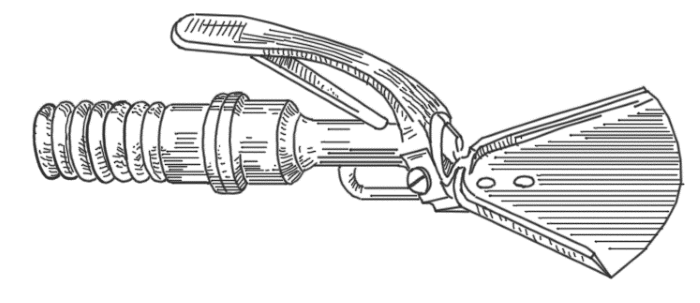
Наконечник душа с приспособлением для рассеивания струи
Видоизменяя соответствующим образом наконечник с отверстиями, можно придавать струе и другие формы и получать таким образом, игольчатый пылевой душ и т. д.
Одни душевые наконечники (струевые и веерные) соединяются с выводными концами труб смесителя короткими (длиной около 30–40 см) толстостенными резиновыми рукавами, благодаря чему имеется возможность двигать наконечником и тем самым менять по желанию направление струи. Другие наконечники соединены гораздо более длинными металлическими трубами, вследствие чего направление струи закрепляется в определенном положении. Так, например, дождевой наконечник обычно прикрепляется к стене или потолку приблизительно на высоте около 3 м от пола; при этом его диск с отверстиями направляется вниз и несколько под углом (в 20–30°), чтобы вода падала из него вниз несколько наклонно (нисходящий дождевой душ).
Еще лучше взять два таких наконечника и установить их так, чтобы струи их падали на бока больного; можно также добавить посредине третий наконечник, направив его струю на спину, чтобы охватывать больного водой одновременно со всех сторон. Можно, наоборот, наконечник укрепить внизу над полом, направив его отверстия кверху; тогда струя будет бить снизу вверх (восходящий, или промежностный, душ). Можно подвести трубы с водой от смесителя к сидячим ваннами и там придавать струе различную форму, величину, направление и т. д.
Часто применяется так называемый циркулярный душ, который состоит из ряда изогнутых трубок диаметром 2–3 см, соединяющихся между собой в виде купола; в целом он имеет вид большой круглой клетки высотой 175 см и диаметром 95 см. На внутренней поверхности труб находится ряд мелких отверстий, из которых бьют многочисленные тонкие струйки воды на больного, стоящего в центре душа.
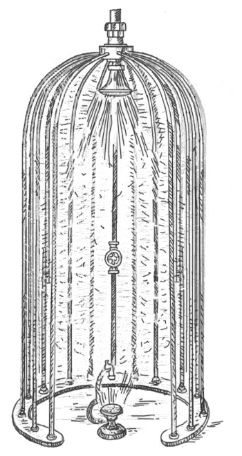
Циркулярный душ
Таким образом, в зависимости от устройства аппаратуры души могут быть различными по форме струи и ее направлению. Кроме того, их различают и по другим признакам.
• По температуре души бывают постоянные (холодные, теплые, горячие – с температурой от 10–15 до 45 °C) и переменные, либо с постепенным повышением или понижением температуры, либо с температурой, быстро переходящей от горячей к холодной и обратно. Примером является шотландский душ, который начинает работать с горячей воды (40–45 °C) в течение 30–60 секунд, а затем сразу переходит на холодную (20–15 °C) в течение 15–20 секунд; такую смену повторяют 2–3 раза подряд. При этом для получения более резких перепадов температуры пользуются двумя смесителями, в которых можно довести воду до любой температуры, или же холодную струю берут непосредственно из водопровода.
• По давлению души бывают: среднего давления – около 2 атм, которые используются чаще всего; души высокого давления – до 4 атм, которые назначаются только при особых показаниях и притом в виде веерных, а не струевых; души низкого давления – около 1 атм, которые обычно применяются в виде дождевых душей с гигиеническими целями.
• По месту приложения души бывают: общие – на все тело, местные – на отдельные части (живот, промежность, суставы), а также падающие на один определенный участок (стабильные, или неподвижные) и передвигающиеся с одного места на другое (подвижные, или лабильные).
Наиболее часто применяется общий струевой душ. Процедуру проводят так: обнаженный больной, смочив предварительно голову холодной водой, становится на расстоянии 2,5–3 м от наконечника душа спиной к проводящему процедуру. Последний, предварительно проверив работу кранов кафедры и достигнув нужной температуры, устанавливает больного и обдает его 1–2 раза полностью развернутым веером с ног до головы сначала сзади, а затем, предложив больному повернуться, и спереди. Потом, приведя веер в компактную струю, проводит ею сначала по задней поверхности в том же порядке, т. е. начиная с ног, но уже медленнее, стараясь вызвать на теле равномерную реакцию покраснения.
Переходя на верхнюю часть спины, помощник вновь несколько развертывает струю веером, а затем, переходя на руки, снова ее суживает, избегая появления у пациента болевых ощущений, щадя позвоночник, грудь и не касаясь головы. Затем, предложив больному повернуться к себе боком и вытянуть руку немного вперед, чтобы только освободить бок для душа, он проделывает то же на боковой поверхности туловища и конечности. Далее, после поворота больного лицом к помощнику, последний направляет струю уже на переднюю часть его тела, причем сосредоточивает ее главным образом на бедрах и нижней половине живота, но по-прежнему щадит грудную клетку; он не должен попадать на лицо и на половые органы, так как это может вызвать очень резкую боль.
Получив и здесь разлитое покраснение покровов, помощник предлагает больному повернуться еще на 90° и переходит на другой бок. Для получения должной реакции он повторяет всю эту процедуру еще раз с самого начала, останавливаясь больше на тех местах, где покраснение обозначилось слабее или же где имеются для этого специальные показания, и заканчивает душ снова веером той же температуры или чаще более низкой (на 2–5 °C).
Процедура должна длиться 1–2 минуты, так как и этого бывает достаточно, чтобы получить хорошую ответную реакцию. В противном случае может возникнуть перераздражение.
Общий веерный и дождевой душ очень близок по технике к общему струевому и отличается только тем, что здесь применяют исключительно веерную или дождевую формы струи.
Контрастный душ. В идеале процедуру проводят так. Человек становится в ванну и обливается водой приятной температуры. Затем ее делают настолько горячей, насколько это возможно.
Через 30–60–90 секунд перекрывают горячую воду и пускают одну холодную. Облив все тело (20–30 секунд и более), вновь включают самую горячую воду, обдают все тело и почти сразу пускают холодную. На этот раз под холодным душем лучше постоять подольше (до минуты и более). Затем опять следует не очень длительный горячий душ и завершающий холодный.
Обливать надо все части тела, не задерживаясь подолгу на одном месте. Всего делают три контраста (перехода от горячей к холодной). Завершать процедуру надо всегда холодной водой. Перед охлаждением всего тела желательно не забывать смачивать лицо.
Примерная схема душа:
• теплый (чтобы привыкло тело);
• горячий (пока приятно);
• холодный (20–30 секунд и более);
• горячий (20–40 секунд);
• холодный (до минуты и более);
• горячий (20–60 секунд);
• холодный (сколько приятно).
Привыкать к контрастному душу, как и к любому новому воздействию, нужно постепенно. Сначала на протяжении 2–4 недель ежедневно принимать комфортный душ (душ приятной температуры). Затем делать только один контраст и не очень долго стоять под холодной водой (5–10 секунд), через 1–2 недели перейти на два, а затем и на три контраста.
Иногда вначале можно уменьшать перепад температур, то есть обливаться не самой холодной и горячей водой, а теплой и прохладной. Для раскачки очень больного организма желательно так и поступать. Но дойдя до ощущения явного холода, надо все же сделать резкий скачок и перейти сразу на ледяную воду.
Не зная этого правила, многие начинающие ошибаются, пытаясь и далее снижать температуру постепенно. Доходят, скажем, до 19–20 °C, а затем, продолжая закаливание, начинают болеть. Секрет здесь прост. Вода такой температуры уже значительно охлаждает тело, но она еще недостаточно холодна, чтобы включить дремлющие защитные силы. Резкое кратковременное обливание ледяной водой не успевает отнять много тепла, но оказывает мощнейшее воздействие на нервную систему, запускает терморегуляторный и иммунный механизм.
Души как водолечебные процедуры противопоказаны при острых воспалительных процессах и обострении хронических заболеваний, гипертонической болезни II и III стадий, тяжелой стенокардии, инфаркте миокарда, аневризме сердца, хронической сердечно-сосудистой недостаточности, состоянии после недавно перенесенного инсульта (6–8 месяцев), злокачественных новообразованиях, доброкачественных опухолях (при их склонности к росту), кровотечениях, туберкулезе в определенных фазах заболевания, инфекционных болезнях, мокнущей экземе, гнойничковых заболеваниях кожи и др.
Процедуры обычно проводят ежедневно. Средняя продолжительность курса лечения не превышает 2 месяцев, хотя в отдельных случаях (например, при ожирении) их можно делать гораздо дольше, если не возникает никаких противопоказаний.
Что касается механизма действия душей, то все их виды вызывают не только термическое, но одновременно и механическое раздражение, что и составляет отличительную черту процедуры. Благодаря этому сочетанию, можно воздействовать как на весь организм в целом, так и на отдельные его части.
При неправильном применении душей легко можно получить вместо ожидаемой пользы вред. Поэтому при дозировке процедуры, кроме установления давления, температуры и продолжительности, необходимо также уметь оценить ответную реакцию больного. Следует помнить, что применение душей требует большого умения и особой осторожности. Процедуры, вызывающие чрезмерно выраженную реакцию больного, должны проводиться по возможности врачом или опытным помощником.
Как во время самого душа, так и непосредственно после него у больного не должно появляться никаких неприятных ощущений: во время самого душа – чувства боли, холода, головокружения, а после него – особого возбуждения, раздражительности, бессонницы или, наоборот, вялости, усталости, разбитости. Правильно назначенный и хорошо проделанный душ в большинстве случаев, кроме быстрого покраснения кожи и чувства согревания, вызывает у больного ощущение свежести и бодрости, а серия душей уже в скором времени дает хороший аппетит, повышенное настроение, крепкий сон; вместе с тем у больного нарастают силы, увеличивается вес, улучшается общее состояние и уменьшаются болезненные симптомы. Из объективных признаков при оценке переносимости душей следует обращать особое внимание на следующие моменты:
• силу дыхательного рефлекса (появление глубоких вздохов, особенно при попадании воды на грудь);
• степень вазомоторной реакции (обычно быстрое и ясное покраснение кожи);
• изменение пульса (обычно тотчас же после душа наблюдается незначительное замедление пульса).
Руководствуясь указанными признаками, индивидуализируют и дозируют давление душа, его температуру и продолжительность.
В целях предосторожности даже у хорошо упитанных и сравнительно крепких людей обычно начинают со среднего давления (около 2 атм), с веерной струи, с температуры, близкой к индифферентной (смотря по зябкости, от 35 до 30 °C), и продолжительности около 1–2 минут. Если такой душ будет хорошо переноситься, то постепенно по мере привыкания понижают температуру, сгущают струю и увеличивают продолжительность (до 3 минут, иногда больше). При появлении даже самых незначительных признаков непереносимости душ немедленно должен быть видоизменен в сторону ослабления, временно прекращен или даже отменен.
Души являются одним из самых эффективных методов водолечения благодаря тому, что во время этих процедур можно легко и широко изменять как температуру воды, так и силу ее давления, т. е. механическое и температурное воздействие. При умелом сочетании дозировки давления и температуры можно получить эффекты различного характера.
Дождевые души более теплые, слабого давления и продолжительностью 4–5 минут оказывают общее успокаивающее действие; души более компактные, особенно струевые прохладные, но зато более сильного давления и более короткие (1–3 минуты), могут оказать возбуждающее действие. При неврозах и психоневрозах такое разностороннее действие метода часто является преимуществом перед другими средствами лечения.
Общие души часто назначаются при заболеваниях обмена, особенно при ожирении. Их хорошо применять в комбинации с диетой и лечебной гимнастикой. Они нередко применяются как последующая процедура, особенно после общих и местных тепловых мероприятий, чаще в виде дождевого тепловатого душа (например, после общих и местных световых, паровых и грязевых ванн). Кроме того, души назначают как укрепляющий и закаливающий метод лечения. При этом необходим очень постепенный и медленный переход от теплых душей слабого давления к более холодным сильного давления и вместе с тем методическое, настойчивое их применение.
Души не могут применяться при общем истощении и слабости, особенно при недостаточности кровообращения, общем артериосклерозе и повышении кровяного давления; при активных туберкулезных поражениях легких их применяют в чрезвычайно осторожной дозе.
Гидромассаж
Душ-массаж. К этому типу гидромассажа можно отнести теплые игольчатый, струйный души и их разновидности. Для обеспечения более глубокого воздействия на ткани, улучшения крово– и лимфообращения, расслабления тонуса мышечных тканей целесообразно проводить такие души, когда пациент лежит на кушетке, время от времени поворачиваясь к направленному на него душу различными частями тела. Процедуру проводит напарник приемами, свойственными для этих типов душей.
Душ Алексеева. Это такой же душ высокого давления, как и широко известный в физиотерапии душ Шарко. Но он работает при нормальном давлении в обычной водопроводной сети, а не от насоса. Исключительной особенностью душа Алексеева являются специальные сопла коноидальной формы. Диаметр входной части отверстия – 5 мм, диаметр на выходе – 0,6–0,8 мм. Образуются струи воды субмиллиметрового сечения и
исключительного «поведения». Они не насыщаются воздухом на расстоянии до 50 см и похожи на тугие нити воды, а затем превращаются в микроскопические капельные структуры. Это душ, способный создавать струю воды, параллельную земле, не рассыпающуюся до 5 м. Такой душ представляет собой игольчатый гидромассажер высокого давления, прибор для стимуляции акупунктурных точек, а также гидроионизатор воздуха, создающий оптимальное соотношение отрицательных и положительных гидроионов для процедур ионотерапии.
Благодаря этим свойствам, он восстанавливает нормальное кровообращение, помогая устранять отеки, варикоз, целлюлит, заболевания опорно-двигательного аппарата, ожирение. Он эффективен при лечении остеохондроза, варикоза, целлюлита, усталости, вегетососудистой дистонии и многих других заболеваний, связанных с последствиями стресса, переутомления, гиподинамии.
Вибрационный подводный массаж. Сущность вибрационного подводного массажа состоит в передаче механических колебаний тканям тела в ванне через водяной слой. Преимущество этого вида массажа перед обычными вибрационными аппаратами состоит в том, что ритмические колебания воды являются более мягким раздражителем, чем механические вибрации. Волны воды охватывают обширную область тела и поддаются тонкой дозировке.
Шотландский душ. Действие шотландского душа заключается в том, что на больного попеременно направляют сначала струю горячей (37–45 °C) воды в течение 30–40 секунд, а затем холодной (20–10 °C) в течение 15–20 секунд. Так повторяют 4–6 раз. Как местную процедуру назначают при ожирении, запорах, связанных с понижением тонуса кишечника (на живот); при миозите поясничных мышц, пояснично-крестцовом радикулите (на поясницу).
Горизонтальный душ-массаж. Общую или местную процедуру проводят на кушетке под расположенной горизонтально над ней трубой с рядом душевых сеток. Массаж проводят непосредственно во время душа. Давление воды – 0,5–1 атм, температура – 36–42 °C.
Подводный душ-массаж. Он состоит в том, что на большую часть тела пускается под слабым давлением струя теплой воды в форме дождевого или широкого струевого душа и под этой струей производится массаж. Вся процедура продолжается 15–20 минут. Теплый душ не только вызывает согревание подлежащих тканей, их гиперемию и пр., но, уменьшая болевые ощущения и расслабляя мускулатуру, дает возможность массировать более глубокие слои тканей и вместе с тем усиливать действие массажа. Массаж под водой дает очень хорошие результаты, особенно при различных заболеваниях суставов, мышц и нервов, а также при пониженном обмене веществ.
Температурное и механическое раздражения кожи вызывают улучшение крово– и лимфообращения, а тем самым – и питание тканей, стимулируют обмен веществ, способствуют более быстрому рассасыванию очагов воспаления. Показаниями для назначения душа-массажа являются: ожирение, подагра, последствия травмы опорно-двигательного аппарата, заболевания суставов (кроме туберкулеза), мышц и сухожилий, последствия повреждений и заболеваний периферической нервной системы, остаточные явления после перенесенного полиомиелита с явлениями пареза мышц, вяло заживающие трофические язвы (без тромбофлебита) и др.
При общем подводном душе-массаже воздействию подвергается все тело. При местном массаже струю воды из шланга с наконечником направляют на определенный участок тела (область сустава, поясничную область и т. д.), температура воды при этом 36–38 °C. При общем подводном душе-массаже температуру воды можно постепенно повышать до 40 °C, при местном – до 42 °C. Курс лечения составляет 15–20 процедур.
Восходящий промежностный душ. При восходящем промежностном душе, применяемом при геморрое, простатите, проктите и др., больной садится на скамью с отверстием, под которым установлен наконечник дождевого душа, обращенный вверх. Струи воды (36–25 °C) попадают на промежность. Процедуры продолжаются в течение 2–5 минут, их проводят ежедневно. Курс – 15–20 процедур.
Вихревой подводный массаж. Это разновидность подводного массажа, который проводят в специальной ванне цилиндрической формы, где создается круговой поток воды от центробежного насоса. На сидящего в ванне пациента воздействует под водой эластичная вибрирующая, смешанная с воздухом вихревая струя, которая производит глубокий и безболезненный массаж. Такой массаж назначают для укрепления мышц брюшного пресса, промежности, туловища и др. Вихревой массаж показан при ожирении, запоре, травмах опорно-двигательного аппарата, заболеваниях рук и ног.
Если в вихревой ванне смонтировать на выходное отверстие центробежного насоса съемную приставку из короткого резинового шланга (длиной 50 см) и на конце этой приставки применять насадки от аппарата для подводного душа-массажа, то можно пользоваться подводным самомассажем. Такая приставка значительно расширяет диапазон массажных манипуляций.
Подводный массаж в домашних условиях. Подводный массаж в упрощенной форме можно проводить самим в теплой ванне. При помощи ручного душа с более теплой водой (контрастная температура увеличивает эффект) массируют отдельные участки тела. Повышение эффекта подводного массажа на отдельные участки тела достигается путем изменения конструкции наконечника ручного душа. Напомним, что большее давление воды действует на организм возбуждающе, меньшее – успокаивающе. То же самое относится к прохладной и теплой струе воды.
Массаж в газовых ваннах. Массирующее воздействие на тело оказывают пузырьки газа, поднимающиеся со дна ванны. Такие ванны оказывают выраженное механическое раздражение кожи и являются разновидностью своеобразного гидромассажа.
Массаж в пенистой ванне. Массирующее действие в такой ванне оказывают пузырьки воздуха, которые, соприкасаясь с кожей и лопаясь, оказывают приятное массирующее действие. Они вызывают ощущение свежести, бодрости и хорошего настроения. В то же время на коже развивается активная гиперемия, повышается обмен веществ, отмечается усиление потоотделения.
Ручной массаж в воде. Такой массаж проводят в ванне с температурой воды 36–38 °C. Усиление действия массажа обусловлено температурным, химическим (морская соль, хвоя, углекислый газ и др.) воздействиями, которые оказывают влияние на рецепторы кожи и глубоколежащие ткани. Применяют классические приемы массажа – поглаживание, растирание (особенно суставов, сегментарной области позвоночника), разминание и потряхивание.
Сочетание массажа и ароматической теплой ванны способствует ускорению окислительно-восстановительных процессов, снижению мышечного тонуса и т. п. Продолжительность восстановительного (в спортивной практике) массажа – 15–25 минут, лечебного – 5–10 минут. Такая процедура активизирует обменные процессы, улучшает крово– и лимфообращение, снимает утомление, но противопоказана при острых травмах, выраженном лимфостазе, отеках, гипертонии, ОРЗ, гриппе.
Массаж в воде (ванне) щетками. Такой массаж проводится с целью более сильного воздействия на ткани. Используется в спортивной медицине для повышения адаптационных возможностей спортсменов. Температура воды при проведении гигиенического самомассажа – 30–32 °C, восстановительного массажа – 36–39 °C, массажа при хронических травмах и заболеваниях – 34–36 °C. В ванну можно добавлять различные лекарственные компоненты: хвою, морскую соль, настойки ромашки, эвкалипта и т. п.
Массаж щетками вызывает сильную гиперемию кожи, оказывает стимулирующее действие на массируемые ткани. Проводится одной или двумя щетками, направление массажных движений такое же, как и в классическом массаже. Продолжительность массажа – 10–15 минут. Эта процедура противопоказана при заболеваниях кожи, фурункулезе, варикозном расширении вен, острых травмах, повышенной температуре тела.
Мыльный массаж. Массаж проводят намыленными руками в положении пациента лежа на кушетке или на массажном столе. Массажист периодически, по мере необходимости, смачивает и намыливает руки. Для массажа используют пережиренное мыло типа «Косметическое», «Детское» и др. Чтобы предупредить охлаждение, пациента укрывают простыней, последовательно обнажая только участки тела, подлежащие массированию. При таком массаже применяются, в основном, приемы поглаживания в продольном, поперечном и круговом направлениях – поверхностные и глубокие. Мыльный массаж проводят в виде общего, сегментно-рефлекторного и местного массажа. После процедуры мыльного массажа принимают теплый гигиенический душ. Продолжительность процедуры – от 5 до 20 минут, через день или через два дня на третий. Курс – 12–15 процедур.
Этот вид массажа показан при хронической болезни сердца, коронарном атеросклерозе, атеросклеротических поражениях конечностей в начальной стадии, начальном проявлении расширения подкожных вен нижних конечностей, рубцовых изменениях кожи от термических ранений, ожогов и травм, угревой сыпи, гиперсекреции сальных желез. Мыльный массаж назначают, когда необходимо щадить кожу от механических раздражений и обычный ручной массаж может травмировать ее, при волосистости рук, ног и груди, когда обычный («сухой») массаж затруднен, при боли в мышцах после интенсивной физической нагрузки, для ускорения восстановительных процессов. Он быстро снимает утомление и действует освежающе.
Водный массаж. Обладает выраженным действием трех факторов оздоровления водой: выделительным – помогающим коже вывести вредные продукты обмена; очистительным – способствующим избавлению организма от болезнетворных начал; укрепляющим тело закаливающими процедурами. Противопоказания – обычные для любого массажа. Водный массаж проводится ежедневно, сразу же после пробуждения.
1-й цикл – вода теплая. Смочить полотенце в воде, отжать, скрутить в жгут и этим жгутом похлопать по спине. Затем смочить ладони водой и похлопать ими руки – по наружной поверхности снизу – вверх, по внутренней – сверху – вниз. Опять смочить ладони и похлопать лицо, шею, грудь, живот, ноги (по внутренней поверхности – снизу – вверх, по наружной поверхности – сверху – вниз), подошвы. Облиться теплой водой.
2-й цикл – вода прохладная. Так же, как и 1-й цикл.
3-й цикл – вода холодная. Проделать то же самое. Затем интенсивно растереть уши ладонями сверху – вниз, спереди – назад: мочки, заднюю стенку ушной раковины, переднюю, внутреннюю. Закончить процедуру обливанием. Налить в таз воду комфортной температуры и облиться ею. Массаж повторять ежедневно. Через 5–7 дней начнется интенсивное потоотделение в течение рабочего дня и ночью. Перед процедурой массажа обязательно очистить кожу от пота мыльной мочалкой без воды. Температуру воды следует постепенно снижать по самоощущению.
Массаж банными вениками. Такой массаж проводится в парилке. Основные приемы – нагнетание свежего пара веником («банный веер»), похлопывание, похлестывание и растирание веником. Массаж проводится на полке парилки в горизонтальном расслабленном положении. Такая прроцедура увеличивает эффективность парилки за счет притока к поверхности тела свежего пара и ароматических веществ из листьев веника, механического раздражения самим веником. Умелое пользование этой процедурой буквально возрождает организм, размягчает все затвердения, рассасывает различные застои в тканях тела и мягко выводит размягчившиеся шлаки и патологические образования через кожный покров, в то же время давая подпитку тканям тела через поры, биоактивные точки.
Массаж-расхлопывание («холодная паровая баня»). Брызнуть на руку холодной воды и тут же сильно похлопать ее ладонью другой руки, чтобы кожа порозовела. То же самое проделать с другой рукой, грудью, спиной, ногами до подошв. Такое сочетание холодной влаги с общим массажем тела благотворно влияет на все тело и его системы. Хорошо использовать соленую воду, растирая тело и сильно похлопывая его после этого. Делать такой солевой водяной массаж можно утром и вечером – это закалит вас и быстро выведет шлаки.
Массаж-«полирование» тела водой. Этот вид массажа проводится после душа или обливания вместо вытирания тела полотенцем, интенсивно растирая его ладонями рук. «Полирование» тела начинают со ступней, постепенно поднимаясь до поясницы, затем также «полируют» каждую руку, грудь от поясницы к шее, спину от поясницы к шее, шею снизу вверх и лицо от центра к ушам и заканчивают «полированием» ушей сверху вниз и спереди назад.
Гидромассажер. Это прибор, выполненный в виде колпака, внутрь которого через множество отверстий подаются струи воды. Такой прибор легко подсоединяется к водопроводному крану. Упругие струйки такого гидромассажера мягко массируют тело, делая кожу гладкой и упругой, одновременно укрепляя сами мышцы. Особой популярностью такой массажер пользуется у женщин. Он прекрасно укрепляет грудь, делая ее упругой, и придает ей хорошую форму и тонус.
Гидромассаж десен. Гидромассажные процедуры десен проводят посредством специальных наконечников под давлением воды до 2 атм. Такой струйный массаж хорошо очищает десенные карманы, вымывая слизь, продукты распада пораженных тканей и отложения на зубах. Он обеспечивает стойкую активную гиперемию, повышает иммунные свойства слизистой оболочки.
А. С. Цопиков сконструировал рациональный наконечник с учетом анатомических особенностей альвеолярного отростка и пародонта. По форме он напоминает нижнюю оттискную ложку, на стенках которой, обращенной к десне, имеются 150 отверстий диаметром 0,3 мм. Отверстия расположены в 3 ряда под разным утлом к поверхности альвеолярного отростка. Струйки минеральной воды под давлением 0,5–2 атм одновременно орошают поверхность десны, сосочки и межзубные промежутки, проникая в зубодесновые патологические карманы и массируя поверхность альвеолярного отростка.
Для гидромассажа десен используются и другие наконечники – например, в виде защитной боксерской шины (для усиления массирующего действия воды).
Гидромассаж десен можно проводить и в домашних условиях. Для этого используют металлический сифон емкостью 2–3 л. Баллон для газированной воды подогревают в ведре с водой (38–40 °C). После подогрева на кран надевают резиновый шланг с наконечником. Струей из наконечника орошают десны, направляя ее последовательно на все участки.
Массаж губ. Проводится мягкой щеткой. Для улучшения кровообращения бледные губы полезно массировать мягкой щеткой, смачивая ее периодически в холодной (можно подсоленной) воде.
Гидромассаж лица. Осуществляют его посредством специальных наконечников. Такой массаж проводится сероводородной водой, преимущественно для лечения больных с послеожоговыми рубцами. Наконечник позволяет создавать струи ударно-массирующего воздействия и представляет собой сплошную трубку с расположенными в шахматном порядке множеством отверстий диаметром 0,3 мм. В наконечнике-щетке выходные отверстия находятся между ее щетинками, что позволяет проводить нежный гидромеханический массаж пораженных участков.
Массаж-растирание лица. Обеими руками энергично растирают щеки, лоб, нос, брови – все лицо, сначала с очень теплой водой, а затем с холодной (до ста движений). Далее делают легкий массаж одновременно обоих глазных яблок концами указательных и средних пальцев (до 100 круговых движений). Этот массаж сохраняет веки в хорошем состоянии, помогает сохранить отменное зрение до глубокой старости. Заканчивается процедура растиранием-массажем мышц шеи, подбородка. Лицо и шею вытирают жестким полотенцем. Такая «грубая» обработка кожи лица делает ее упругой, мягкой, гладкой, эластичной, не допуская возникновения старческих морщин. Массаж-растирание желательно делать утром и вечером.
Гидропунктура (флюидопунктура). Это стимуляция лечебных акупунктурных точек на теле прерывистой струей воды. Используют струю с частотой прерывания 15–20 Гц и давлением 1–2 атм. Время воздействия – 1–3 минуты. Стимуляция может проводиться как в возбуждающем, так и в успокаивающем режиме. Обладая более физиологическим воздействием, чем уколы игл при акупунктуре, гидропунктура после тщательной разработки методик может оказаться перспективным методом воздействия на организм при различных патологических состояниях.
Ванна с джакузи (гидромассажем). Основным принципом такого вида гидромассажа является воздействие на определенные участки тела смешанных с воздухом струй воды, которые под давлением выбрасываются из форсунок.
Современные гидромассажные устройства позволяют при помощи форсунок и специальных регуляторов менять направление струй и давление воздуха.
За десятилетия применения джакузи медики открыли множество полезных свойств гидромассажа:
• Расслабляющее: гидромассаж способствует физическому и психическому расслаблению. Поэтому вы можете воспользоваться им, если у вас стрессовое состояние или бессонница. При постоянных нервных перегрузках очень рекомендуется установить дома джакузи.
• Тонизирующее: если же вы устали или не выспались, ощущаете слабость и сонливость, джакузи окажет на организм тонизирующее воздействие. Рекомендуется принимать прохладную ванну с джакузи по утрам в течение 10 минут, или если вам необходимо в ближайшее время «прийти в форму».
• Улучшает кровообращение: процедуры гидромассажа способствуют улучшению кровообращения, стимулируют циркуляцию лимфы. Поэтому полезно их применять при проблемах с сосудами – например, при варикозном расширении вен.
• Регулирует обмен веществ: гидромассаж способствует улучшению обмена веществ – в частности, улучшает функции надпочечников и щитовидной железы. Помогает бороться с целлюлитом, а также при проблемах с кожей.
• Восстанавливает опорно-двигательный аппарат: гидромассажные ванны способны восстанавливать подвижность суставов и мышечную ткань, поэтому их можно применять при проблемах с костями, переломах или разрывах мышц.
В последнее время гидромассаж все чаще назначается в качестве медицинской процедуры. Джакузи есть практически во всех клиниках и санаториях. Преимущества такого лечения очевидны: оно безболезненно для пациента и не имеет таких побочных эффектов.
Подводный массаж. При проведении подводного массажа на ванну натягивают специальный гамак, который позволяет регулировать глубину погружения пациента и дает возможность придать ему свободное расслабленное горизонтальное положение, а массируемому участку тела – среднефизиологическое. Во взвешенном горизонтальном состоянии тела в воде особенно хорошо снимается напряжение мышц.
Массаж проводят с помощью специального аппарата (например, УВМ «Тангентор-8»), насос которого всасывает воду из ванны и подает ее по эластичному шлангу под различным давлением на тело пациента. На конце шланга закрепляют различной формы насадки для получения компактной массирующей струи воды различной мощности.
Массаж начинают после пятиминутной адаптации пациента в воде и проводят его, строго соблюдая общие правила массажа. Температура массирующей струи такая же, как и в ванне; давление воды в струе – от 1 до 4 атм (оптимальное 2–3 атм). Наконечник располагают на расстоянии 12–15 см от тела. Для смягчения массирующей струи аппарат имеет регулирующее устройство, присасывающее в струю воздух.
Продолжительность – 5–20 минут; курс – 15–30 процедур. Под водой, как и при ручном массаже, применяют четыре основных приема: поглаживание, растирание, разминание, вибрации. Массаж половых органов, передней поверхности шеи и грудных желез у женщин не проводится.
Подводный душ-массаж усиливает кровоснабжение кожи, повышает диурез и обмен веществ, способствует быстрому рассасыванию кровоизлияний и отечной жидкости в тканях, суставных выпотов, ускоряет процессы восстановления двигательной функции. Под влиянием подводного массажа увеличивается подвижность в суставах конечностей и позвоночного столба, размягчаются и становятся более подвижными рубцы и спайки, улучшается общее состояние. Такой массаж является «комбинированной процедурой» при лечении последствий переломов костей, вывихов суставов, растяжений и разрывов связок.
Подводный душ-массаж показан при полиартрите, межпозвоночном остеохондрозе, деформирующем спондилезе, болезни Бехтерева, радикулите, полиневрите, неврозах и невротических состояниях, последствиях миелита, травмах спинного мозга и опорно-двигательного аппарата, нарушении жирового обмена, дисфункции кишок, заболеваниях кожи. При различных кожных заболеваниях кроме обычных насадок используют специальную «гребенку», которую присоединяют непосредственно на конце массажного шланга. Такая гребенка позволяет проводить массаж одновременно на широкой поверхности кожи, оказывая мягкое массирующее действие.
Лечебные процедуры эффективно применяют при нейродермите, склеродермии, псориазе, при состоянии хрупкости и ломкости капилляров у больных ожирением, авитаминозе, атеросклерозе, заболеваниях суставов конечностей, варикозном расширении вен. После процедуры отмечаются порозовение кожи, чувство легкости, свежести, бодрости. В настоящее время подводный душ-массаж широко практикуется в комплексной восстановительной терапии и особенно эффективно используется на курортах.
Подводный душ-массаж – сильнодействующая процедура, поэтому требует строго дифференцированных показаний с учетом функционального состояния сердечно-сосудистой и нервной систем, формы и стадии патологического процесса. Он противопоказан при остро-протекающих процессах на коже, обострении или прогрессивной стадии заболевания, инфекционных болезнях, грибковых заболеваниях.
Противопоказания для гидромассажа.
• Нельзя принимать ванны сразу после приема пищи, пока идет процесс переваривания. В таком случае процедура просто не пойдет вам на пользу.
• Категорически не рекомендуется джакузи тем, у кого проблемы с сердцем. В крайнем случае попробуйте принимать гидромассажную ванну в позиции сидя. Температура воды при этом не должна превышать 30–34 °C. Находиться в ванне можно не дольше 15 минут.
• Не стоит принимать ванну, если вы плохо себя чувствуете. Не факт, что джакузи избавит вас от недомогания, ведь причины его вы не знаете. В результате плохое самочувствие может только усугубиться. Не следует думать, что гидромассаж – панацея от всех болезней!
• Если у вас имеются какие-то серьезные заболевания, прежде чем самому себе «назначать» гидромассаж, проконсультируйтесь с врачом – возможно, пользование джакузи вам просто противопоказано!
Как принимать гидромассажные ванны? Сначала помойтесь под душем. Продолжительность первого сеанса не должна превышать 10–15 минут, а температура воды – 38 °C. В дальнейшем можно довести продолжительность приема ванны до 25–30 минут.
Если вы почувствовали дискомфорт или недомогание – срочно прекратите процедуру!
Компрессы
К распространенным в больничной и домашней практике водолечебным мероприятиям относятся такие гидротерапевтические процедуры, как согревающий компресс и влажное обертывание.
Местный согревающий компресс состоит из четырех частей: первый, непосредственно прилегающий к телу влажный слой; следующий за ним непроницаемый слой; третий слой, плохо проводящий тепло; четвертый слой позволяет удерживать компресс на месте.
Первый слой состоит из нескольких наложенных друг на друга кусков полотна или салфеточной ткани. Этот слой складывают или выкраивают такой величины и формы, чтобы он соответствовал месту наложения, которое должно по своим размерам несколько превосходить болезненный участок.
Для второго слоя берут специальную желтую клеенку или мягкое прорезиненное полотно, но можно обойтись и простой вощеной бумагой. По величине этот слой должен превосходить предыдущий в ширину и длину приблизительно на 2–3 см.
Третий слой делают из ваты, фланели, байки, шерстяных платков, сукна и т. п. Он должен с избытком покрывать предыдущий слой и кладется в достаточном количестве, чтобы полностью обеспечить согревание, прекращение отдачи тепла из находящихся под ним слоев.
Четвертый слой составляют различного рода бинты: марлевый, полотняный, фланелевый и т. д.
Согревающий компресс накладывается следующим образом: предварительно подготавливают три первых слоя, которые складывают в обратном порядке – сначала согревающий, затем изолирующий и, наконец, влажный. При этом последний смачивают в прохладной воде (около 20–15 °C) и выжимают настолько сильно, чтобы оставшаяся в нем жидкость не могла после наложения компресса вытечь из-под непроницаемого слоя и смочить следующие за ним третий и четвертый. Затем все три слоя сразу и по возможности быстро прикладывают к назначенному месту и тотчас закрепляют бинтами так, чтобы компресс держался на своем месте, но в то же время не был туго притянут, так как это может не только беспокоить больного, но и стеснять необходимые движения, а также препятствовать правильному кровообращению. Вместе с тем такой компресс должен настолько плотно прилегать к телу, чтобы воздух извне не мог проникнуть под него.
При таких условиях компресс быстро согревается и уже не холодит, как это ощущается в первый момент после наложения, а, наоборот, дает приятное ощущение тепла. Быстрота согревания компресса зависит от следующих моментов: температуры воды, в которой смачивают влажный слой, а главное – от ее количества, задержанного в этом слое. Температура воды должна быть рассчитана так, чтобы вызывать хорошую реакцию (чем вода будет холоднее, тем, в силу температурного контраста с кожей, реакция будет сильнее). Толщина слоя должна быть такой, чтобы компресс по возможности быстрее согревался, а не охлаждал долго тела, но вместе с тем оставался влажным вплоть до следующей смены.
Таким образом, действие согревающего компресса складывается:
1) из первоначального температурного раздражения, наступающего от соприкосновения теплой и даже горячей кожи с холодным влажным слоем, что вызывает обычную сосудистую реакцию на холод (первоначальное сужение и последующее расширение периферических сосудов) и ряд рефлекторных сегментарных и отдаленных явлений;
2) из последующего согревания этой области в силу прилива крови, с одной стороны, и присутствия слоя из плохого проводника тепла – с другой. Это согревание продолжается довольно долго (целыми часами), так как непроницаемый слой не дает влаге быстро испаряться.
Лучше всего менять компресс не более 2–3 раз в сутки. Сняв компресс, следует тщательно обтереть кожу мягким, сухим и теплым полотенцем и накрыть этот участок чем-нибудь теплым, пока не будет приготовлен новый компресс. Нужно стараться избегать охлаждения больного места, а еще лучше заранее все приготовить для второго компресса и затем уже снимать первый.
Если окажется, что кожа слабо реагирует (не краснеет, не согревается), то ее следует перед накладыванием компресса растереть, обмыть холодной водой либо водой со спиртом, или же прибавить к воде, в которой смачивают первый слой, соль, водку, чтобы способствовать появлению реакции. Если же, наоборот, появится раздражение кожи – нужно на время прервать накладывание компресса, смазать кожу нераздражающей мазью или присыпать пудрой и закрыть ватой. Для предупреждения развития раздражения необходимо перед накладыванием компресса хорошо очистить кожу, затем каждый раз сменять или хорошо промывать влажный слой или добавлять к жидкости, в которой он смачивается, немного борной кислоты. В исключительных случаях при несоблюдении всех предосторожностей, длительном и беспрерывном наложении компрессов или чрезмерной чувствительности кожи может развиться мацерация кожного покрова.
Механизм терапевтического воздействия согревающего компресса заключается в вызывании очень длительной гиперемии кожных покровов и такого же согревания. Это согревание своеобразно: оно очень медленно и постепенно развивается за счет местной активной гиперемии, возникающей вслед за термическим раздражением, и за счет прекращения местной теплоотдачи. Для определенной части тела создаются тепличные условия, действующие непрерывно в течение многих часов, при наложении компресса один за другим – целыми сутками.
Компресс, в зависимости от его размера, может оказывать воздействие на ряд кожных сегментов с их нервно-сосудистыми образованиями и различными рефлекторными связями. Несомненно, что в результате мягкого теплового раздражения может измениться возбудимость кожных рецепторов, а также могут возникнуть импульсы, ведущие к изменению нарушенного местного и общего кровообращения, питания тканей, резорбционных и ряда других тканевых функций. Эти изменения могут распространиться на целые области тела или преимущественно на отдельные органы, в зависимости от области приложения и размеров компресса. Результатом этого является:
1) воздействие как местное (при воспалении серозных оболочек, слизистых, синовиальных и т. д.), так и более общее (при бессоннице, приливах крови к голове); в последнем случае нужно накладывать компресс по возможности большого размера (например, на живот, обе голени и т. д.);
2) рассасывающее действие при инфильтратах, выпотах и других остаточных явлениях местных воспалительных процессов;
3) болеутоляющее при некоторых воспалительных процессах и ряде нервных заболеваний;
4) противовоспалительное (при флегмонах и пр.). Применяют также компрессы без непроницаемого слоя. Их называют возбуждающими, или присницевскими, компрессами. Для наложения такого компресса берут длинный (3–4 м) и довольно широкий (30–50 см) бинт из холста. Один конец его смачивают на таком протяжении, чтобы можно было в 1–2 слоя обернуть ту часть тела, на которую желают наложить компресс. После этого бинт хорошо отжимают и накладывают на тело, а остальная часть бинта, оставшаяся сухой, обертывается вокруг первой, но уже большим числом оборотов. Можно взять (и это будет даже удобнее) два отдельных куска холста соответствующей величины, но один немного уже и соответственно короче – для смачивания, а другой шире и длиннее – для создания верхнего и последнего слоя.
При наложении возбуждающих компрессов необходимо, чтобы верхние слои холста не промокли (хорошо отжатые влажные слои, лишний сухой слой), а оставались сухими и тем самым обеспечивали очень медленное испарение, а следовательно, и очень медленное высыхание компресса. Благодаря этому вызываются гиперемия и согревание соответствующей части тела, как при обычном согревающем компрессе. Правда, из-за отсутствия непроницаемого слоя эти компрессы высыхают гораздо быстрее, поэтому их приходится менять через более короткие промежутки времени (обычно через 3–6 часов); но тщательно наложенный компресс может продержаться гораздо дольше.
Часто применяются также компрессы в виде повязок, наложенных вокруг живота, и в виде так называемой крестовидной повязки (т. е. компресса на всю грудь), причем обертываются накрест плечи с лопатками и ключицами.
Влажные обертывания
Влажные обертывания, или влажные укутывания, в сущности представляют собой согревающий компресс, только положенный на все тело и без непроницаемого слоя.
Для проведения процедуры необходимы кушетка или кровать с удобным ложем и изголовьем, большое теплое одеяло, лучше шерстяное, и полотняная, не слишком тонкая простыня. Ширина простыни должна быть такой, чтобы ею можно было два раза обернуть грудь больного, а длина – чтобы ее хватило от затылка до пяток. Одеяло же должно быть несколько шире, чтобы обернуть им грудь можно было также два раза, но уже вместе с плечами, и несколько длиннее, чтобы у ножного конца оставалось свободным около 1 м. За неимением одеяла такого размера можно воспользоваться двумя меньших размеров (если же они недостаточно теплые, то даже тремя, четырьмя). В этом случае нужно класть их не вдоль кровати, а поперек, и притом так, чтобы одеяло, предназначенное для обертывания нижней части тела, одним краем подходило под другое. А последнее, служащее для укутывания верхней части тела, кладут так, чтобы головной край доходил до предполагаемого положения затылка или середины ушной раковины. При этом нужно следить, чтобы не было складок и свободные боковые части одеяла, спускающиеся с обеих сторон кушетки, были приблизительно равной величины. Простыню кладут поверх одеяла так, чтобы один боковой ее край был несколько шире другого; вместе с тем и верхний конец ее должен быть примерно на 5 см короче одеяла.
Вода для смачивания простыни должна быть прохладной (около 30–25 °C), реже – совсем холодной (20 °C и ниже). Холодная вода вызовет более сильную кожную и общую реакцию, но вместе с тем даст и более неприятное ощущение охлаждения, главным образом в момент первого соприкосновения. Поэтому здесь нужно приспосабливаться к чувствительности больного и характеру его заболевания.
Сразу же после того, как на одеяле будет разложена смоченная и хорошо отжатая простыня, на нее ложится полностью обнаженный больной (предварительно надо смочить голову). Он ложится на спину, вытянувшись во весь рост, так чтобы верхний край одеяла доходил ему до середины ушной раковины. Его тотчас быстро обертывают свободными концами простыни сначала с той стороны, где свободный край уже; при этом больной поднимает обе руки кверху, для того чтобы простыня могла обхватить всю грудь, а также туловище и ноги. Затем то же самое повторяют с другой стороны.
Оставшуюся свободную часть простыни подкладывают под больного, который оказывается весь закутанным в нее. Чтобы ноги были укутаны порознь, между ними прокладывают складку простыни. На этом заканчивается первый момент обертывания.
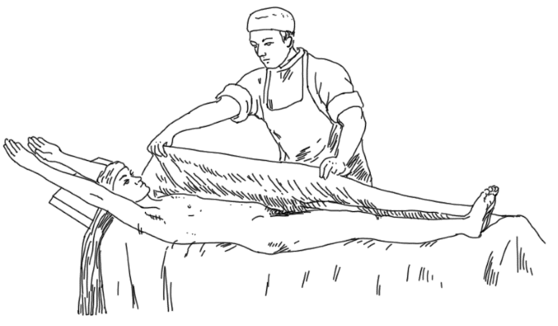
Влажное обертывание
Затем больной плотно завертывается в одеяло таким образом, чтобы верхний конец его с одной стороны перекидывался через плечо на переднюю часть груди и оттягивался сильно книзу. Таким образом одеяло покрывает все плечо, ключицу и верхнюю часть груди. Затем край одеяла, висящий свободно с этой стороны больного и оказавшийся в верхней части уже сдвоенным, перекладывают через больного на другую сторону, благодаря чему на груди образуется складка. Чтобы одеяло плотнее обхватывало нижнюю часть туловища и ноги, эту складку подтягивают вверх к другому плечу и свободный конец подсовывают под больного. При этом, для того чтобы одеяло аккуратнее лежало на верхней части туловища, приходится иногда сделать еще одну складку Это, пожалуй, самый трудный и в то же время очень важный момент в укутывании, так как нужно, с одной стороны, по возможности герметически укутать больного, чтобы воздух при дыхательных движениях и кашлевых толчках не проходил под одеяло, а с другой – чтобы одеяло не препятствовало движениям, не стесняло поворота головы и не сдавливало шею.
Свободный край одеяла подсовывают по возможности дальше под боковую сторону больного по всей ширине его плеча и длине руки, приложенной к туловищу чтобы закрепить его в таком положении. Затем также поступают и со вторым одеялом; но здесь дело обстоит гораздо проще, так как обернуть им нижнюю часть туловища и ноги легко можно без складок. Обернув больного одеялами с одной стороны кушетки, проделывают то же самое и с другой стороны, причем также начинают с верхнего конца и стараются положить складки так, чтобы они совершенно закрыли верхние концы простыни и дополнили герметическую упаковку верхней части туловища. Чтобы полностью закончить обертывание, нужно подвернуть под ноги конец одеяла, вместе с которым подвертывается и нижняя часть простыни, оказавшаяся посредине трубкообразно свернутого одеяла (если простыня была длиннее тела больного).
В заключение на верхнюю часть одеяла вокруг шеи кладут мягкое полотенце (для того чтобы защитить подбородок и шею от излишнего раздражения шерстяным одеялом), а на голову – холодный компресс.
В таком виде больного оставляют спокойно лежать в течение назначенного времени, после чего его быстро раскрывают, и вся процедура укутывания считается оконченной. Однако на практике почти всегда к влажным укутываниям присоединяется (по имеющимся показаниям) еще одна процедура: или заключительная процедура (обтирание, дождевой душ, ванна, полуванна), или просто завертывание в одеяло и питье горячего чая (чтобы вызвать потоотделение), или только более или менее продолжительный отдых.
Обертывание голеней. Применяя обертывания голеней у пациентов с повышенной температурой тела, необходимо ориентироваться на состояние кровообращения. Чем теплее голени и ступни, тем прохладнее может быть накладываемый компресс. Температура используемой воды должна быть около 20 °C – слишком холодная вода может привести к сужению периферических сосудов и тем самым к уменьшению отвода тепла.
Слегка отжатый компресс накладывают от подколенной ямки до лодыжек, чтобы охватить проходящие близко к поверхности сосуды, и фиксируют сухим полотенцем. Продолжительность процедуры – около 20 минут, затем контроль температуры тела; после 10–20-минутного интервала – повторное накладывание компресса. При неустойчивости, централизации кровообращения и сужении периферических сосудов, а также при ознобе, но высокой температуре тела, можно применить компресс с температурой воды 30 °C. Однако при этом необходимо внимательно наблюдать за реакцией больного.
Так как классическое обертывание некоторые больные переносят плохо, иногда в технику процедуры вносятся некоторые видоизменения.
• Некоторые больные, если у них закутаны руки, чувствуют себя беспомощными, испытывают особое чувство страха и становятся беспокойными, возбужденными. Тогда нужно оставить руки свободными и делать обертывание только до подмышек, а верхнюю часть туловища накрыть чем-нибудь теплым или же положить предварительно крестообразный компресс.
• У некоторых больных очень плохо согреваются ноги. Тогда можно применить предварительное растирание, согревание ног, а затем уже делать обертывание или же после укутывания набросить на ноги лишнее одеяло, положить грелку. Кроме того, во избежание лишнего охлаждения ног можно сузить простыню в ее ножном конце таким образом, чтобы при обертывании на ногах получилось не более двух мокрых слоев. Если и это не помогает, необходимо укоротить простыню до коленей или даже еще больше.
• Если книзу обертывание будет доходить только до бедер, а вверху – до подмышек, то оно ограничится одним только туловищем, и получится так называемое туловищное укутывание.
• Иногда при общих укутываниях появляются неприятные ощущения в области сердца. В этих случаях на область сердца непосредственно на мокрую простыню кладут охладитель с плотными стенками и плотными трубками для притока и оттока холодной воды.
• Если, наоборот, нужно согреть какую-нибудь часть тела, то можно через тот же прибор пропускать не холодную, а горячую воду. Обертывание в этом случае представляет местный согревающий компресс на живот и нижнюю часть груди, но со специальным согреванием подложечной области (сюда кладут согреватель, через который пропускается вода температуры 40–42 °C).
Действие общих укутываний на организм довольно сложно, оно может изменяться в зависимости от продолжительности процедуры.
• В самом начале, когда только что произошло соприкосновение поверхности тела с холодной простыней, в
большей или меньшей степени возникает раздражение холодом (в зависимости от разницы температуры простыни и кожи). Возникает ряд обычных рефлекторных явлений, а вместе с тем больной начинает отдавать свое тепло плотно прилегающей к телу холодной простыне, и отдает его столько, сколько необходимо для выравнивания между ними температуры. Следовательно, в первый момент общих влажных укутываний происходит определенное возбуждающее и жаропонижающее действие.
• В последующем, когда температура тела и простыни уже сравнялась и больной согрелся, на что требуется около 5 минут, создается равномерно влажная и теплая атмосфера (оранжерейная). Больной огражден от всех раздражений извне и лежит совершенно спокойно. Первоначальное чувство холода, иногда очень неприятное, сменилось приятным ощущением тепла. Периферические сосуды расширены, пульс и дыхание, участившиеся в первый момент, не только пришли в норму, но стали даже медленнее. Вместе с тем обычно понижается кровяное давление (на 20 мм и более по Рива-Роччи) и возникает некоторое малокровие внутренних органов и, по-видимому, мозга. Благодаря этому, постепенно понижается возбудимость нервной системы, обычно настолько значительно, что больные засыпают, спят крепко и спокойно, несмотря на не совсем удобное положение. Итак, в этом периоде отмечается ярко выраженное общее успокаивающее действие.
• Если продолжать процедуру дольше (в среднем 40–50 минут), то наступает третий период: начинается постепенное перегревание тела, так как отдача тепла организмом, благодаря плотному укутыванию в шерстяные одеяла, в значительной мере затруднена. Первыми признаками такого перегревания являются вторичное учащение пульса и дыхания, появление некоторого возбуждения; вскоре наступает потоотделение, причем больной потеет обильно и довольно легко. Таким образом, в среднем через 45–60 минут после начала обертывания начинается потогонное действие, которое продолжается до тех пор, пока больного не развернут (можно продолжительность потоотделения довести до часа).
Окружающая обстановка и сопутствующие мероприятия могут оказать при обертываниях (впрочем, как и при других процедурах) очень большое влияние на лечебный эффект. Так, например, удобное положение, тишина вокруг, прекращение разговоров способствуют успокаивающему действию; питье горячих и даже холодных напитков усиливает последовательное потоотделение; наоборот, прохладное обмывание, полуванна или душ прекращают потоотделение и освежают больного. Учитывая все это и изменяя в соответствии с реакцией больного различные детали в технике процедуры, можно с помощью влажных обертываний довольно быстро (даже в домашней обстановке) добиться достаточно разнообразного и энергичного воздействия на организм.
• Например, влажное обертывание делают на короткое время – до тех пор, пока больной не почувствует, что начинает согреваться (на это требуется около 5 минут); сразу же после развертывания делают кратковременное обертывание, а затем повторяют его еще один или два раза (соответственно около 10 и 15 минут). Такая процедура может применяться как хорошее временно жаропонижающее средство (оно легко переносится больными и оказывает благотворное воздействие). Ее часто применяют при некоторых острых инфекционных заболеваниях, которые протекают с высокой температурой, угнетением центральной нервной системы, сухой горячей кожей.
• Более продолжительные укутывания (30–40 минут), т. е. длящиеся после того, как больной уже согрелся, могут применяться как хорошее успокаивающее средство (например, при нервных и психических заболеваниях с симптомами возбуждения и раздражения, при бессоннице). При этом важно уловить момент начала потоотделения, так как это и есть период наибольшего успокаивающего действия; затем, наоборот, начинается развитие возбуждения.
• Если укутывания продолжаются еще дольше (более часа), то они являются энергичным потогонным и усиливающим обмен средством и применяются при болезнях почек, ожирении, подагре, хронических мышечных ревматических нарушениях, а также при различных формах поражения суставов.
Общие укутывания нельзя применять при значительно выраженных сердечно-сосудистых нарушениях.
Существует еще один вид общих обертываний или укутываний. Это сухие обертывания, когда больного завертывают в сухую мохнатую простыню (полотняная хуже, так как несколько холодит), а затем в теплые одеяла (можно завертывать не так герметично). При сухих обертываниях охлаждение тела и рефлекторное холодовое раздражение совершенно исключаются, поэтому остается только успокаивающее и потогонное действие. В основном сухие обертывания используются для получения успокаивающего действия, причем эта процедура хорошо переносится даже очень чувствительными и возбудимыми больными. Для усиления успокаивающего действия сухие обертывания комбинируют с одновременным местным согреванием живота или предшествующей индифферентной водяной или хвойной ванной. Нередко они применяются и в наиболее простой форме – в виде получасового или даже часового лежания на кушетке завернутым в простыню и одеяло после большинства гидротерапевтических процедур (отдых в одежде дает меньший результат).
Паровые процедуры
Различают холодный пар, температура которого не выше нормальных условий (15–25 °C), и горячий пар, температура которого выше температуры окружающей среды. Горячий пар применяется для местных и общих процедур. Паровые процедуры бывают с влажным (горячим туманом) и сухим паром.
Местные паровые процедуры проводятся локально для различных частей тела для рассасывания в нем болезненного очага за счет активизации крово– и лимфотока и расслабления тканей («раскрытия» клеток).
Баня с парилкой перестраивает на хороший лад весь организм, не оставляет в нем ни одного «уголка», который не откликнулся бы на воздействие «камня огненного и пара жаркого». Паровое воздействие на организм помогает эффективно вымывать шлаки, удаляя с потом кислые продукты обмена, продукты распада и патологические клетки. Установлено, что горячий пар способен «вышибать» из человека даже отравляющие вещества и ядохимикаты, вплоть до ДДТ.
Вследствие наступающих гормональных сдвигов ускоряется процесс обновления белка клеток, усиливается распад жира. При паровой процедуре укрепляются клетки и ткани организма, расширяются сосуды кожи и легких, усиливается работа сердца, активизируются различные системы (кровообращения, лимфатическая, нервная, эндокринная и др.), происходит настоящая «гимнастика сосудов» (особенно в сочетании с контрастными водными процедурами – ванной, бассейном, обливанием), омолаживаются и смягчаются суставы, кожа очищается и становится упругой, тренируются дыхание и потоотделение, что при систематическом воздействии делает организм более устойчивым к перепадам температуры в обычных условиях, а также к любым капризам природы. Общая паровая процедура улучшает состояние нервной системы: понижаются возбудимость, внутреннее напряжение, усталость. Приходят спокойствие и легкость, ощущение бодрости и силы, хорошее настроение и радость жизни – непременные спутники паровых процедур.
При приеме паровых процедур следует соблюдать три важных правила:
• не принимать паровые процедуры при острых стадиях болезни;
• заканчивать паровую процедуру (если нет специальных показаний) холодным обмыванием водой;
• горячий пар для вдыхания и пар, воздействующий на глаза и уши, не должен обжигать.
Дадим еще несколько полезных рекомендаций:
• париться полезнее всего утром: организм лучше в это время переносит дополнительные нагрузки. Если париться вечером, то продолжительность процедуры желательно свести к минимуму;
• самое лучшее время для пользования паровой баней – через 2–4 часа после приема пищи;
• находясь в парильне, нельзя допускать перегревания тела, для чего целесообразно промокать тело от выступившего пота или смахивать его веником (рукавицей);
• целебное действие пара повышается, если использовать различные ароматические добавки: хвойный экстракт, чабрец, мед, хлебный квас, пиво, горчицу, ментоловые капли, эвкалиптовое, пихтовое или кедровое масло, липовый цвет, душистый жасмин и др.;
• принятие пищи после бани дает поправку телу. А если купаться в бане на пустой желудок, то это вызовет худобу и сухость тела. Тем, кто мало занимается физическим трудом или физическими упражнениями, следует мыться, добиваясь обильного выделения пота.
Общие паровые процедуры
Их обычно проводят в банях, в специальных помещениях – парилках. В зависимости от температуры, влажности и сопутствующих пару компонентов, различают различные паровые бани общего воздействия.
Камерная баня. Это тепловая камера (самых разных конструкций), в которой вся поверхность тела, кроме головы, подвергается воздействию пара. В этом случае сохраняется преимущество финской бани – воздействие на тело высокой температуры (до 130 °C) с низкой относительной влажностью, а ее недостаток – дыхание горячим воздухом – исключается. Пациент не испытывает затруднений с дыханием, т. к. дышит нормальным комнатным воздухом. Практика показывает, что такие бани оказываются в ряде случаев очень эффективны (при лечении болезней почек, полиартрита, миозита, радикулита, при растяжении связок и других травмах). Кроме того, замечено, что такое тепловое воздействие усиливает обменные процессы, приводит к интенсивному окислению жиров и, следовательно, к уменьшению жировых отложений.
Разновидностью камерной бани является паровая ванна в деревянном ящике. В таких ящиках голова человека также не подвергается действию пара, а на тело воздействует пар невысокой температуры (до 45 °C).
В камерных банях (ящиках) рекомендуется находиться до тех пор, пока на лбу не выступит пот, и затем, в тех случаях, когда это является продолжением лечебной процедуры, тотчас же после выхода из камеры накладывают возбуждающее (17–20 °C) общее обертывание или принимают кратковременную холодную ванну. Можно так же, как и при других парных и банных процедурах, после короткого охлаждения повторить камерную процедуру.
Очень полезно в процессе парения класть на голову охлаждающий компресс, сменяя его, когда он нагреется. Также можно почаще обтирать лицо и голову смоченным в холодной воде полотенцем или же обернуть им шею, чтобы не пропускать пар из камеры.
Домашняя сауна. Эту паровую баню можно легко соорудить из подручных средств непосредственно в ванной. На обруч типа хулахуп прикрепляют полиэтиленовую пленку так, чтобы она образовала вокруг тела цилиндрическую занавеску до ног, а около плеч собиралась бы при помощи шнурка и затягивалась на шее. Стоять надо на деревянном настиле, положенном на дно ванны. Через резиновый шланг, надетый на носик электрочайника, пускают пар под занавеску. Париться в такой парилке нужно около 5 минут. После «бани» следует принять приятный прохладный душ.
Паровой душ
Паровые души, сущность которых сводится к применению сильной струи перегретого пара на определенном участке тела, требуют для своего осуществления наличия парообразователя и несложного аппарата с наконечником и небольшим приспособлением для собирания конденсационной воды (последняя легко образуется по пути прохождения пара через более холодные трубы и, будучи выброшена струей проходящего пара хотя бы в виде капель, может обжечь больного). Это приспособление сводится в принципе к расширению трубы, подводящей пар, незадолго перед тем, как она подходит к наконечнику. Сюда, в это расширение, стекает образующаяся вода, и отсюда ее выпускают время от времени через кран.
Что же касается наконечника, то он такой же, как у обыкновенного струйчатого душа, только более легкий и короткий. Соединяется с подводящей пар трубой либо металлической трубкой на шарнире, что позволяет двигать его в разные стороны и закреплять там, либо просто резиновым рукавом, что также дает возможность очень легко изменять его положение. В последнем случае к наконечнику прикрепляется длинная легкая палка, с помощью которой больной сам может передвигать его то в одну, то в другую сторону и таким образом направлять струю пара туда, куда это нужно. Давление пара у места выхода из наконечника около 1 атм, а температура струи здесь около 80–90 °C. Больной становится приблизительно на расстоянии 0,5 м от наконечника, чтобы чувствовать только приятное согревание, но не жжение (обычно у самой кожи при этом температура равняется 40–45 °C).
В наконечник вмонтирован конденсатор, собирающий капельки воды, и поэтому пар выходит из паропровода «сухим», что предупреждает возможность ожога. Здоровые части тела рекомендуется защищать, например, легким щитом из фанеры или брезента. Продолжительность парового душа – 15–30 минут, хотя некоторые делают его короче. Непосредственно после процедуры следует короткое местное обмывание холодной водой (для возвращения тонуса сосудов) и нередко еще общий дождевой душ (для удаления осевшего пара и пота).
После парового душа подвергшийся воздействию пара участок тела укутывают теплой тканью или обливают прохладной водой, чтобы тонизировать сосуды. Продолжительность душа – 10–15 минут, курс – 12–15 процедур.
Обычно паровой душ принимается раз в день, но можно повторять его и два раза, причем общее число сеансов не ограничивается, ибо сама процедура переносится очень легко.
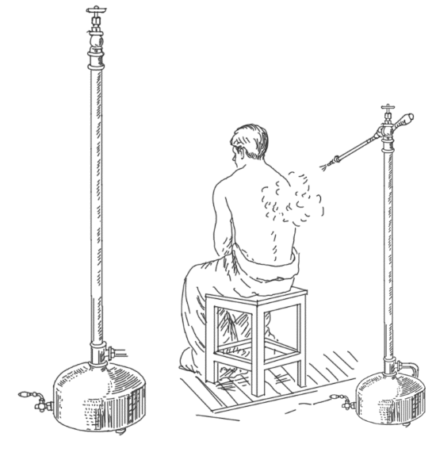
Паровой душ
На месте применения очень быстро после начала процедуры появляется резко выраженная гиперемия, которая, по утверждению многих авторов, развивается сильнее, распространяется глубже и держится дольше, чем при применении каких-либо других методов теплолечения.
Паровой душ применяется в тех случаях, когда необходимо получить болеутоляющее действие (особенно при миозитах) и рассасывающее остаточные явления различных воспалительных процессов. Этот душ дает эффект в борьбе с рубцовой тканью при ограничении движений. Мягкое, приятное и легко переносимое тепло пара делает его применимым при некоторых поражениях кожи, торпидно протекающих язвенных процессах кожи и слизистых, при пролежнях. Присоединение к местному паровому душу последовательного или, еще лучше, одновременного под паровой струей массажа, а также активных и пассивных движений является комбинированным методом, дающим прекрасные результаты во многих случаях нарушения подвижности в суставах.
Паровые ванны
Эти ванны хорошо очищают организм от накопившихся шлаков. После пара следует обмыться холодной водой, что укрепляет и закаляет тело. При заболеваниях отдельных частей тела следует принимать паровые ванны для этих частей тела. Пар при паровых ваннах не должен обжигать.
Устройство общих паровых ванн довольно просто. Они представляют собой деревянный ящик той или иной формы, в который больной может поместиться так, что снаружи остается только голова. В ящик подводится горячий пар и с помощью расположенных внутри узких металлических трубок с мелкими отверстиями распределяется по всей ванне; кроме того, в ящике также устанавливают различные приспособления для его обогревания (чаще всего калорифер, нагревающийся от парообразователя). Это устройство можно в значительной степени упростить, сделав стенки ящика более легкими (например, из фанеры, брезента) и прикрепив их к стойкам.
Этот остов устанавливают над больным, лежащим на кровати или кушетке, и плотно накрывают сверху и с боков одеялами; затем в пространство между ними и кроватью, где находится больной, напускают пар. Можно посадить больного в обычную ванну, предварительно положив на дно деревянную решетку из довольно толстых перекладин, а под нее налить горячей воды или же, что еще лучше, непрерывно пропускать воду по дну ванны под решеткой. Одновременно ванну вместе с больным сверху прикрыть одеялом, но так, чтобы голова его оставалась свободной. Иногда делают еще проще: сажают больного на стул, накрывают сверху и с боков чем-нибудь малопроницаемым замкнутое пространство и напускают пар.
Дешевле и легче сделать местные паровые ванны. Форма и величина их будет определяться той частью тела, для лечения которой они предназначаются. Такие ванны могут быть сделаны из самого разнообразного материала.
Как источником пара для паровых ванн повсюду в водолечебницах пользуются особым котлом-парообразователем. Последний, впрочем, необходим только для паровых душей или общих паровых ванн, а для упрощенных паровых ванн, особенно местных, можно воспользоваться маленькими переносными котлами.
При применении общей паровой ванны необходимо позаботиться, во-первых, о доставке для дыхания чистого, свежего воздуха, так как тяжесть регуляции теплообмена нагружает легкие. Во-вторых, нужно обеспечить достаточное охлаждение головы, так как во время паровых ванн особенно легко наступают явления прилива крови к голове (большую пользу оказывает здесь и струя воздуха от небольшого электрического вентилятора). Начинают общую паровую ванну обычно с 40 °C и доводят ее до 50 °C; продолжительность ванны – 10–15 минут (редко – больше). После ее окончания, смотря по показаниям, следует или охлаждающая процедура (ванна, полуванна, обливание или душ), или же, если необходимо, дальнейшее потение, укутывание в теплые одеяла и укладывание в постель, а в заключение – отдых не менее 30 минут. Процедуры повторяют обычно через два дня, а весь курс лечения состоит приблизительно из 15–20 ванн.
Паровые ванны считаются одной из сильнодействующих процедур, так как в силу затрудненной теплоотдачи и значительного поступления тепла извне в них быстро наступает перегревание тела со всеми его последствиями. В связи с этим они требуют от больного большой реактивности, особенно со стороны сердечно-сосудистой системы и органов дыхания. Поэтому паровые ванны назначаются только больным с хорошим сердцем и сосудами и со здоровыми легкими, не лихорадящим, не склонным к кровотечениям и без наличия острых воспалительных явлений.
Общие паровые ванны, подобно другим горячим процедурам, применяются главным образом как средство, заметно усиливающее обмен, как энергичное потогонное и изредка как подготовительная процедура для согревания перед последующей холодной процедурой; в последнем случае они должны быть более кратковременными (но не до потения). Они представляют значительные преимущества перед русскими банями, так как при этом больные имеют возможность дышать свежим воздухом, а не горячим банным и к тому же насыщенным водяными парами и всякими испарениями. Кроме того, в них гораздо легче регулировать степень насыщения воздуха ванны парами и температуру, т. е. можно более точно дозировать врачебное воздействие.
Паровая ванна на ночном стуле (горшке). Эта ванна применяется при болезнях мочевого пузыря, почек и камнях в них, различного рода застоях в малом тазу, кистах, геморрое, выпадении прямой кишки. В ночной горшок (ведро, бак) наливают кипяток с добавлением отваров овсяной соломы, полевого хвоща и садятся на специальный стул (или дощечку от унитаза) и укутывают себя по пояс, чтобы пар не уходил, а туловище оставалось на воздухе. Продолжительность ванны – 15–20 минут, не более 1–2 раз в неделю. После процедуры желательно лечь в постель и пропотеть в ней некоторое время, после чего надо провести быстрое холодное обливание.
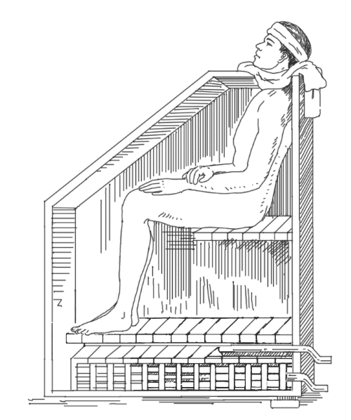
Паровая ванна общая
В такой ванне можно применять: отвар сенной трухи – при конвульсионном и ревматическом состоянии живота, нарывах в мочевом пузыре, при водянке, запорах; отвар овсяной соломы – при болезнях почек и мочевого пузыря; отвар полевого хвоща – при плохом мочеотделении; настой ромашки (1 ч. ложка на стакан кипятка) – при выпадении прямой кишки.
Паровая ванна Куне на плетенчатой скамье.
Применяется для ослабленных пациентов на специальном аппарате. Пациента укладывают на скамью с плетенчатым сиденьем и укрывают сверху большим шерстяным одеялом, поплотнее закутав шею. Под скамью ставят 3 паровых горшка: один – под ноги, другой – под область крестца, третий – под спину. В процессе парения пациент поворачивается на скамье то на спину, то на живот. Продолжительность процедуры – 30–45 минут.
Постельная паровая ванна по Киницт-Зигерту.
Часто применяется сторонниками естественных методов лечения. Легко выполнима и не требует специального помещения и оборудования.
Эту паровую ванну принимают следующим образом. Вокруг пациента обертывают влажную, хорошо выжатую полотняную простыню, затем кладут вокруг тела грелки: грелку поперек стоп, по одной грелке снаружи около правой и левой ноги, в области коленей, и по одной грелке снаружи около правой и левой сторон туловища, в области предплечий. Грелки, наполненные горячей водой (56–60 °C), предварительно заворачивают в смоченное в горячей воде и слегка выжатое полотенце. Каждую из обернутых таким образом грелок помещают в толстый шерстяной чулок или же заворачивают в шерстяную материю. В местах установки грелок на тело кладут дополнительные куски шерстяной материи, чтобы исключить
обваривание прилегающих частей тела. После этого накладывают на пациента шерстяное одеяло. Особое внимание следует обратить на то, чтобы обертывание было плотно закреплено на шее (можно дополнительно обернуть шею платком).
Для детей и возбудимых пациентов рекомендуется трехчетвертное обертывание с тремя грелками или обертывание только ног с тремя грелками. Можно класть грелки и снаружи, к шерстяному одеялу, но тогда следует накрывать их дополнительно периной.
Постельная паровая ванна может быть видоизменена в соответствии с имеющимися условиями и средствами, а также в зависимости от возраста, пола, телосложения и тяжести болезни пациента. Эти ванны оказывают очень мягкое воздействие на тело, поэтому могут назначаться как детям, так и престарелым лицам. Пациент, находясь в постели, экономит силы и не создает дополнительной нагрузки на сердце. Влажная теплота, образующаяся вследствие отдачи пара грелками, в соединении с испарениями тела размягчает кожу, прочищает ее поры, вызывает усиленный приток крови к коже от внутренних органов, переполненных кровью; отложившиеся в тканях болезнетворные вещества растворяются и уносятся кровью к коже, где выделяются в виде испарины.
Постельная паровая ванна по Рикли. Эту паровую ванну устраивают для ослабленных больных следующим образом. Поверх матраца на постели расстилают клеенку (или целлофан), а поверх нее шерстяное одеяло или полотняную простыню для впитывания образующегося пота. На эту подстилку ложится больной, а над ним ставят каркас, накрытый большим шерстяным одеялом (брезентом), которое со всех сторон свешивается вниз, чтобы предотвратить утечку пара. По резиновому шлангу горячий пар подается под каркас. Внутри каркаса шланг входит в распределительный ящик со множеством отверстий, через которые пар и расходится по всей ванне. Продолжительность процедуры – 30–45 минут.
По окончании процедуры проводят охлаждающие приемы: для постельных больных – путем обмывания, а для более крепких – в ванне.
Ножная и стопная паровые ванны. Эти паровые ванны (особенно стопные) применяются при приливах крови к голове, при головных, зубных и ушных болях, при болезнях дыхательных органов и сердца, т. е. во всех случаях, когда надо вызвать отток крови от верхней части тела. Процедуру лучше всего проводить с помощью специального аппарата для стопных паровых ванн, в котором пар подается в сосуд для размещения стоп или ног до коленей.
В домашних условиях такую паровую ванну оборудуют на тазу или ведре. Таз наполняют кипятком, поперек таза устанавливают дощечку, на которую ставят ноги, прикрывая их плотным покрывалом. Можно для повышения эффекта применять отвары разных трав. Продолжительность ванны – 15–20 минут, 1–2 раза в неделю. Если необходимо продлить процедуру – в воду кладут раскаленный кирпич, который и будет сохранять тепло воды.
Эти паровые ванны используют также при отеках ног, мозолях, опухолях, застое крови, сильном ножном поте, при холоде и сухости в ногах. После процедуры следует охладить ноги холодной салфеткой, вытереть и обсыпать (при лечении потливости) тальком.
Паровая ванна для рук и кистей. Эта паровая ванна может проводиться в специальном аппарате для ручных ванн или же по-кнейпповски с помощью одеяла, закрывающего наглухо руки со всех сторон так, чтобы подаваемый под него пар не проходил ни снизу, ни сверху. Эта процедура применяется либо как местное средство для устранения ревматических и подагрических поражений, затвердений, опухолей, хронического холода в кистях, растворения болезненных отложений, либо с целью вызвать отлив крови от внутренних органов – легких, сердца, головы. Продолжительность процедуры – 25–40 минут.
Головная паровая ванна. Во время такой ванны действию пара подвергаются голова и шея, а также верхняя часть груди. Для выполнения процедуры необходимо наполнить тазик кипятком и прикрыть крышкой. Сесть на стул, накрыться плотным покрывалом и наклонить голову над тазом. Верхняя часть тела должна быть обнажена. Затем крышку с тазика снять, чтобы горячие пары поднимались к голове и на грудь. Продолжительность ванны – 15–20 минут, но не более 2–3 процедур в неделю. Следует держать рот, нос и глаза открытыми.
Хорошо эту ванну делать на картофельном отваре с добавлением настойки эвкалипта, укропного, пихтового (соснового) масел или же добавлять травы: тысячелистник, ромашку, бузину, крапиву, сенную труху, семена укропа, шалфей, подорожник, липовый цвет и т. д.
После головной паровой ванны рекомендуется погрузиться в холодную ванну на 1 минуту. Не мочите голову в течение первых 10–30 секунд. Такие ванны эффективны при простудах, ревматических и конвульсивных болях в верхней части тела, при катарах верхних дыхательных путей. Хорошо очищают кожу лица, голову, смягчают и удаляют слизь из гайморовых и лобных пазух, носоглотки, легких. Применяются как местное средство при ушибах, глазных, носовых, зубных, горловых и головных болях, при нарывах, опухолях, сыпях, при внутренних и наружных новообразованиях.
Головная паровая контрастная ванна (ингаляция). Используется при заболеваниях горла (ангина, хрипы, тонзиллиты, фарингиты) и болях в ухе. Подышать над паром из кастрюльки или чайника с несильно кипящим раствором (желательно с добавлением лекарственных трав или прополиса и т. д.) 1–2 минуты. Потом умыть лицо прохладной или холодной водой и прополоскать ею рот, в основном десны и язык. Эту процедуру нужно повторить несколько раз.
Паровая ванна для лица. Применяется как лечебная ванна при болезнях носолобных областей (аналогично головной паровой ванне) и как косметическое средство для очищения кожи лица от пыли, грязи, роговых наслоений. При косметическом применении паровой лицевой ванны в разогретой паром коже расширяются устья выводных протоков сальных и потовых желез. Сальные пробки, закупоривающие выводные протоки сальных желез, становятся мягче. После этого косметическая чистка кожи (удаление камедонов) производится легче, не вызывая травм.
Аппарат для паровой ванны лица состоит из стеклянного колпака, куда подается пар. К той стороне, где колпак открыт, приближают лицо пациента. Голову вместе с колпаком паровой ванны покрывают полотенцем и подвергают лицо действию пара в течение 10–15 минут. Температура пара – около 50 °C.
Местная паровая ванна. Применяется к отдельным частям тела с целью устранить боль, размягчить, уменьшить в объеме, заставить всосаться или выделиться наружу новообразования, затвердения, опухоли, а также при воспалениях глаз и ушей, при зубных болях, при опухании желез и миндалин, при колике, желудочной судороге, при опухолях печени и желудка, при кистах женских половых органов, при параличах, болезнях суставов, воспалении надкостницы. Например, при боли, простреле в ухе (отите) пар впускают в ухо через воронку, направляя ее концом в ушную раковину, при этом само ухо и прилегающие области обертывают полотенцем, чтобы пар их не обжег.
Паровой компресс (припарка). Паровые компрессы приготавливают следующим образом. Берут стираное полотно, складывают его в 6–8 раз, погружают в горячую воду (50–65 °C), вынимают оттуда, выжимают слегка или вовсе не выжимают и заворачивают в плед или кусок фланели так, чтобы влажный горячий компресс был закрыт со всех сторон. Через 15 минут прежний компресс заменяют на новый; такую смену компрессов проводят в течение 2–2,5 часа. В заключение следует охлаждающий прием – лучше всего обмывание.
Припарки назначают для уменьшения болей при ревматизме, подагре. Для этого используют отвары различных растений: листьев белокопытника лекарственного, корней девясила и др.
При хронических болезненных состояниях, когда требуется вызвать размягчение, рассасывание и выделение наружу всякого рода затвердений, процедуру можно проводить чаще двух раз в день.
Паровая ванна для гениталий и ректума. Эти ванны применяют обычно при болезнях этих органов для смягчения воспаленных тканей и лучшего промывания их кровью. Например, для лечения эрозии, цистита, простатита хорошо зарекомендовали себя паровые бани с прополисом. В ночной горшок налить горячей воды (такой температуры, чтобы терпело тело), бросить горошину прополиса и сидеть над паром 10–15 минут. Курс лечения: первый курс – в течение недели через день; неделя отдыха; затем – 3 недели, также через день; после недельного перерыва повторить трехнедельный курс.
Особая паровая ванна для отдельных больных мест. Такие ванны обычно применяются местно при укусах насекомых, змей, собак. Они выводят ядовитые вещества из организма. Выполняются так же, как и местные паровые ванны. Продолжительность процедуры – не более 20 минут.
Эффективность всех паровых процедур многократно увеличивается, если пар получать не из чистой воды, а использовать отвары различных трав, растворы лекарственных средств или солей. Так, например, пары морской воды полезны при водянке и ушной боли.
SPA-процедуры. По одной версии, это название – сокращение от римской поговорки Sanus per aqua – здоровье через воду. По другой, название произошло от названия входящего в Римскую империю маленького городка Спа, славящегося своими термальными источниками.
В современном понимании SPA – это сложнейший процедурный комплекс, разрабатываемый индивидуально для каждого клиента и включающий в себя различные методики оздоровления – как восточные, так и западные. Водорослевые обертывания соседствуют там с душем Шарко; аппаратный массаж – с рефлексотерапией, китайским массажем шиацу или стоун-терапией; лечение светом (фототерапия) – с расслабляющими аромаваннами и т. д. На пользу делу работают новейшие научные разработки и последние открытия в этой области, а также древние, проверенные временем рецепты.
Главное достоинство SPA – воздействие не на какой-либо один орган, а на организм в целом. Излечение тела приводит к «лечению» души: избавлению от стрессов, переутомления, бессонницы, депрессий.
Кстати, как бы ни казалось на первый взгляд безобидным «лечение водой», оно должно проводиться только под строгим медицинским наблюдением – ведь на то оно и лечение! SPA-терапия прописана при многочисленных видах заболеваний: болезнях крови, костно-мышечной системы, сердечно-сосудистых заболеваниях, болезнях органов пищеварения и мочеполовой системы, болезнях нервной системы, органов дыхания и гинекологических заболеваниях. Но, учитывая такой внушительный список болезней, и список противопоказаний может быть не меньше.
Какие же процедуры предлагает SPA? Их много, и некоторые из них вполне доступны нам в домашних условиях. Например, обычная ванна – самая простая процедура. Ее мы проделываем чуть ли не каждый вечер – в целях гигиены. Но общеизвестно, что ванна, особенно с добавлением различных травяных отваров и экстрактов, эфирных масел или морской соли, способна решать также многие другие задачи. Например, прогревать при болезни, усиливать кровообращение, снимать судороги, расслаблять или, напротив, тонизировать, снимать стрессы – то есть довольно сильно воздействовать на организм человека. Вот почему тем, кто страдает гипертонией или стенокардией, от ванн лучше вовсе отказаться, а остальным нужно следить, чтобы уровень воды в ванне всегда был ниже уровня сердца.
Бани
Еще одним общепризнанным в медицине природным оздоравливающим и закаливающим средством являются бани.
Бани относят к водолечебным процедурам, в которых воздействие на организм осуществляется горячей и прохладной водой, паром и пр. Систематическое посещение бани, прогревание в ванне является мощным закаливающим средством, выводящим ядовитые продукты из организма. Эта целебная гигиеническая процедура быстро восстанавливает силы и должна применяться минимум 1–2 раза в неделю.
Хорошо известно значение этой процедуры при простудных и других заболеваниях, в повышении приспособительных сил к перепадам температуры воздуха (жаре, холоду, переохлаждению) и иммунологической реакции на различного рода инфекции, в усилении обмена веществ и функции выделения из организма отработанных, ненужных ему продуктов обмена и др.
Пользоваться банями для лечебных целей лицам с заболеваниями сердца желательно под контролем врача и по предложенной им методике, с периодическим врачебным контролем за общим состоянием.
Показаниями к назначению бань в качестве водолечебной процедуры служат неспецифические заболевания верхних дыхательных путей, опорно-двигательного аппарата (вне стадии обострения), начальные проявления гипертонической болезни, атеросклероза, последствия травм нижних конечностей, экссудативный диатез и др.
Противопоказаниями являются эпилепсия, злокачественные и доброкачественные (растущие) опухоли, инфекционные болезни, выраженные гипертоническая болезнь и атеросклероз, кровотечения, болезни крови.
Наиболее популярны русская баня с парильней и суховоздушная финская сауна. В основе действия на организм лежит контраст температур (согревание в термальной камере – парильне и последующее охлаждение в бассейне, под душем или в прохладной комнате), способствующий тренировке сосудов.
Сауна— закаливание с использованием контрастных раздражителей, которое в последнее время нашло широкое применение при лечении заболеваний органов дыхания. Сауна широко показана при хроническом неспецифическом бронхите, хроническом бронхите обструктивного типа, бронхиальной астме, хроническом синусите, назофарингите, ларингите, после воспаления легких.
Сауна эффективно способствует урежению кашля, астматических приступов, повышению объема форсированного выдоха и жизненной емкости легких, уменьшению количества обострений и увеличению продолжительности периодов улучшения. При назначении лечебной сауны лицам с заболеваниями дыхательных путей и легких возникает необходимость индивидуально определить количество процедур и длительность пребывания в парильном отделении.
Прежде чем зайти в парильное отделение, необходимо принять теплый (35–38 °C) душ в течение 3–4 минут, причем не рекомендуется мыть голову (легче переносится температура воздуха), мыться с мылом во избежание обезжиривания кожи; с мылом моются после сауны. На голову необходимо надеть шапочку из плотного материала или повязать голову полотенцем – это создает микроклимат и предохраняет от перегрева. В парильном отделении рекомендуется дышать носом, при этом горячий воздух охлаждается, а сухой увлажняется. Сначала лучше посидеть внизу, чтобы прогреться и подготовить организм к более высокой температуре. При этом исключается резкое повышение температуры тела, так как механизм терморегуляции включается постепенно.
Самое рациональное положение в парильном отделении – лежа, так как температура воздуха в этом случае одинакова для всех участков тела, тогда как при положении стоя разница температуры воздуха на уровне пола и головы составляет 10–15 °C, а это неблагоприятно влияет на терморегуляцию. Если нельзя принимать процедуру лежа, можно это делать сидя, положив ноги на скамью или полку, на которой сидят.
Хорошие результаты при заболеваниях дыхательных путей и легких достигаются при добавлении к воде, выливаемой на камни, настойки эвкалипта, ментоловых или мятных капель, раствора хлорофиллипта, настоя сосновых почек, отваров бузины, багульника и других лекарственных растений, показанных при этих заболеваниях.
При назначении лечебной сауны длительность первой процедуры может колебаться от 4 до 8 минут; она не должна превышать 10 минут при температуре воздуха 60–90 °C и влажности 10–15 %. С каждой последующей процедурой время можно увеличивать на 0,5–1 минуту и постепенно переходить к 2–3-разовому повторению процедур. После сауны необходимо отдохнуть в течение 15–30 минут, хорошо укрывшись простыней.
О положительном влиянии процедур лечебной сауны на организм свидетельствуют улучшение самочувствия, исчезновение хрипов и затрудненного дыхания, крепкий сон, хороший аппетит, повышение работоспособности. Признаками отрицательного влияния являются вялость, головная боль, затрудненное дыхание, раздражительность, бессонница, снижение или потеря аппетита. Как правило, это результат неправильного назначения процедур лечебной сауны. В этом случае необходимо изменить ее методику и дозировку.
Противопоказанием к назначению сауны являются острые вирусные заболевания верхних дыхательных путей, острые специфические и неспецифические воспаления дыхательных путей, бронхоэктатическая болезнь, хронические заболевания легких с сердечно-сосудистой недостаточностью, злокачественные образования.
Бани. Существует два типа бань: русские бани, в которых имеются приспособления для образования в большом количестве пара (особая печь «каменка»); римско-ирландские, финские или турецкие бани, где моющиеся подвергаются действию горячего сухого воздуха, для получения которого устраивается особая центральная печь – калорифер.
В самом простом виде все бани состоят из одной комнаты для раздевания и одной или двух – для мытья и вызывания потения. В более усовершенствованных банях число комнат увеличивается, особенно когда оба типа соединяются. В состав таких смешанных бань могут входить следующие отделения: для раздевания; собственно для мытья с ваннами, а иногда и с бассейнами; для вызывания потения сухим воздухом, нагретым до температуры 45–50 °C, а иногда и добавочная – с температурой воздуха 65–90 °C; для вызывания потения жаром температурой около 45–50 °C; для последовательного обливания и душа; иногда для купания с целью охлаждения; для массажа; для заключительного отдыха.
Действие бань довольно сложное, так как здесь, помимо влияния обильного количества горячей воды (и в некоторых случаях – холодной), растирания, похлестывания веником, а иногда и массажа, имеет место воздействие на организм горячего воздуха или пара. Результатом этого является прежде всего очищение наружных покровов от всяких загрязнений, причем в результате обильного потения очищаются все поры тела, нередко содержащие в себе различного рода бактерии. В одном этом уже заключается громадное значение бань в оздоровлении населения; тем более что они, удовлетворяя естественную потребность в поддержании чистоты тела, в то же время дают при умеренном пользовании улучшение самочувствия и повышение сил, а вместе с тем и трудоспособности.
Кроме того, бани применяются с чисто лечебной целью как доступное потогонное средство. Также они могут служить местом для проведения других гидротерапевтических процедур. Последнее допустимо лишь там, где нет специально приспособленного для этой цели помещения.
Показания и противопоказания к баням те же, что и для общих паровых процедур.
Грязи
Иловые грязи соленых озер, торфяные грязи, глина, парафин, озокерит принадлежат к группе веществ, образующихся в природных условиях под действием геологических процессов и климатических влияний и именуемых пелоидами (грязеподобными). Отсюда их применение с лечебными целями получило название пелоидотерапии. Осадочные иловые грязи соленых озер или лиманов, а также торф представляют собой продукт сложных физико-химических и биологических процессов.
Главными действующими моментами при лечении грязями являются температурные, механические и химические раздражения. Механическое воздействие слагается из давления массы грязи на тело больного и трения грязевых частиц об его кожу, вследствие чего возникает раздражение кожных нервных окончаний.
Химический состав грязей, их физическое строение и свойства различны и находятся в зависимости от природных условий их образования. Лечебные свойства грязей также неодинаковы. Однако их объединяет большое содержание раздражающих и вяжущих органических и неорганических (гумусных веществ, свободных кислот, двувалентного железа), а отчасти и протеиновых веществ.
Грязи отличаются особенной пластичностью, зависящей от количества содержащихся в них веществ, находящихся в коллоидальном состоянии. Тесное соприкосновение грязи и вообще пелоидов с поверхностью тела, вследствие их особой пластичности и липкости, облегчает их механическое и тепловое воздействие на организм, а также влияние химических составных частей. Содержащиеся, например, в грязи газы, летучие вещества, ионы могут всасываться кожей.
В зависимости от физических и химических свойств каждого из пелоидов обусловливается их особое температурное влияние, которое существенно отличается от других видов температурного воздействия. Приведенная ниже сравнительная таблица дает представление о теплоемкости и теплопроводности некоторых из них, приготовленных для отпуска процедур.
Таблица
Теплоемкость и теплопроводность пелоидов
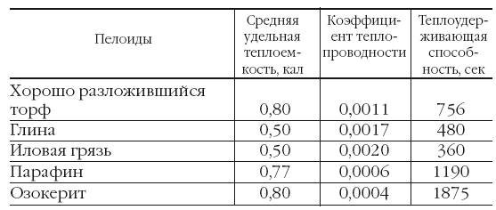
Большая теплоемкость, малая теплопроводность и пониженная конвекционная способность грязей обеспечивают более легкую переносимость горячих грязевых процедур, чем водяных. Это зависит, очевидно, от иного теплообмена между телом больного и грязью и дает возможность наносить раздражение более высокими температурами и тем самым достигать более сильных реакций. Кроме механического, термического и химического влияния, в лечебном действии грязей отводят некоторую роль и наличию в них радиоактивных веществ, возникновению электрических токов между кожей и грязью, причем полагают, что последние могут облегчить проницаемость кожи для некоторых содержащихся в грязях веществ. Благодаря комбинации всех этих свойств, грязи оказывают свое лечебное действие.
В механизме действия грязи играют роль сложные биологические процессы, возникающие под влиянием грязевого раздражения местно в тканях, а также и отдаленно – во многих системах организма. Горячая грязевая масса, приложенная к поверхности тела или слизистой полости (влагалища, прямой кишки), вызывает местную гипертермию, гиперемию, улучшение местного кровообращения, что обусловливает повышение местных процессов обмена, а следовательно, и усиление рассасывающего действия патологических инфильтратов и отеков, уменьшение воспалительных явлений. На этой основе усиливаются регенеративные процессы в пораженных тканях, стимулируются иммунобиологические защитные процессы, и все вместе взятое способствует восстановлению функций больного органа или систем организма.
При наличии показаний к лечебному применению грязей раньше отправляли больного на соответствующий курорт, так как проведение основательного курса грязелечения только там и было возможно, благодаря не только достаточному количеству грязи, но и подходящему климату, соответствующей обстановке. Теперь же во многих случаях можно применять лечение грязью и на местах, притом с хорошим результатом, нередко мало уступающим эффектам лечения на соответствующих курортах. Ученые предложили видоизменять химические и физические свойства местной глины в желаемом направлении, прибавляя к ней различные вещества. В последнее время делают попытки создавать даже подобие естественной грязи более сложным биологическим путем.
Для лечебного применения грязь, торф, глину освобождают от посторонних примесей – камешков, остатков растений.
Доставленные грязь, торф и глину надо исследовать микробиологическим способом на наличие в них
патогенных микробов. Это же необходимо делать время от времени и при их использовании с лечебной целью. Грязь, доведенную до консистенции жидкой кашицы или густой сметаны прибавлением горячего (50–55 °C) маточного рассола (рапы), в крайнем случае воды, тщательно перемешивая, подогревают на водяной бане (в южных районах летом практикуется также способ солнечного нагрева); при этом температура воды бани не должна быть выше 70–80 °C, а грязи – 50–55 °C. Способы нагревания грязи, при которых она может быть нагрета выше 60 °C или даже может подгореть, ведут к потере ее лечебных свойств вследствие нарушения физико-химического строения.
Во внекурортной обстановке находят широкое применение преимущественно местные грязевые процедуры, а также влагалищные и прямокишечные тампоны. К местным процедурам относятся местные грязевые ванны (чаще при наличии грязи только жидкой консистенции), состоящие в том, что подлежащие лечению части тела (руки, ноги, таз) опускаются в специальные ванночки, наполненные грязью, подогретой до назначенной температуры. Гораздо чаще применяются грязевые лепешки и припарки.
Для применения грязевых лепешек на лежак кладут сначала одеяло, на него простыню, а затем в один или два слоя что-нибудь непромокаемое, например, клеенку, брезент; на них накладывают слой приготовленной грязи (в соответствии с больной частью тела или несколько шире) толщиной 5–8 см. Смазав грязью подлежащую лечению поверхность тела, больного укладывают на подготовленный слой грязи, накладывают ее слоем 3–5 см и закрывают брезентом и одеялом. Для того чтобы грязевая лепешка не остывала (а этому нужно придавать особое значение), на нее иногда кладут грелку с горячей водой или же с этой целью применяют местную световую ванну, но тогда ограничиваются только обмазыванием грязью и не обертывают сверху брезентом и одеялом. Больной лежит так от 20 до 30 минут. Затем его развертывают, он встает, тщательно моется теплой водой (обычно с помощью дождевого или струевого душа) и, обязательно отдохнув еще 30–60 минут в лежачем положении в хорошо проветренном помещении (в некоторых случаях предварительно нужно пропотеть 30 минут под одеялами в постели), может одеться и через 0,5–1 час выходить на воздух (даже в непогоду).
Тем не менее, после грязе-, торфо– или глинолечебных процедур необходимо избегать переохлаждения: носить теплое трикотажное белье, а также защищать подвергавшиеся лечению части тела специально сшитыми теплыми повязками.
При применении грязевых припарок поступают несколько иначе: приготовленную грязь завертывают в какую-нибудь материю или накладывают ее в особый мешок, которым обертывают больную часть тела; в остальном все делается так, как описано выше. Припарки удобны в применении: меньше пачкают тело, больше сохраняют грязь, быстрее приготовляются. Однако они менее целесообразны, так как при этом уменьшается как механическое, так и химическое раздражение непосредственно самой грязью.
Местно грязь часто применяется и в виде влагалищной или прямокишечной тампонады.
Температура грязи для местного лечения при интенсивном методе сначала составляет 40–45 °C и постепенно, по мере привыкания, повышается до пределов переносимости, но обычно не выше 50 °C. Сеансы продолжаются 10–15 минут и повторяются сначала через день, позже – 2–3 дня подряд и один день перерыв. Такой метод показан для крепких больных, не страдающих нарушением сердечно-сосудистой и эндокринно-вегетативной системы.
При облегченном методе грязелечения температура грязи – 38–44 °C, сеанс – 10–20 минут, сначала через день, позже – 2–3 дня подряд и один день перерыв. Всего на курс лечения 15–20 процедур. Так проводится лечение раненых, не слишком ослабленных больных при слабо выраженных сердечно-сосудистых и вегетативных нарушениях.
Большие количества грязи хранят в специальных бассейнах, меньшие – в ящиках или бочках. Чтобы грязь не высыхала и не окислялась на воздухе, ее заливают слоем (до 20 см) естественной или искусственно приготовленной рапы или 5–6 %-ным раствором поваренной соли с добавлением 3 г сернокислого магния на 1 л раствора или 2 г сернокислого кальция.
Отработанную грязь складывают отдельно и, залив соответствующим раствором, подвергают в течение 4 месяцев регенерации. В этот период обязательно проводят бактериологический анализ. В случае неоднократно подтвержденного отсутствия патогенных микробов грязь может быть снова использована для лечения, но не раньше, чем через 2–3 месяца после начала регенерации.
Грязелечебные процедуры действуют более энергично, чем другие тепловые, и применяются для рассасывания всевозможных инфильтратов, кровоизлияний и разнообразных остаточных явлений воспалительных процессов (например, при гинекологических заболеваниях, после аппендицита, перитонита), а также при разнообразных заболеваниях периферической нервной системы, мышц и особенно суставов (туберкулезные поражения даже в поздних стадиях своего развития требуют большой осторожности, ввиду возможного обострения и даже генерализации процесса). При ряде заболеваний, особенно при тугоподвижности суставов, особую пользу приносит присоединение к грязелечению массажа, а также активной и пассивной гимнастики. Грязелечение может комбинироваться с одновременным применением гальванического тока в форме грязегальвано-ионотерапии.
Местное грязелечение не может быть применено при острых заболеваниях, активном туберкулезе, особенно протекающем с лихорадкой, при общих инфекциях, злокачественных новообразованиях, резком истощении, сердечно-сосудистой слабости, наклонности к кровотечениям.
Ингаляция и гидроаэроионизация
Ингаляция
Ингаляция – метод аэрозольной терапии, лечебным фактором которой являются жидкие частицы – аэрозоли. К водным ингаляциям относятся паровые и тепловлажные. Распыление лекарственного вещества обеспечивает его более высокую фармакологическую активность, приводит к увеличению общего объема лекарственной взвеси, большей поверхности контакта раствора лечебного препарата, быстрой всасываемости, поступлению в кровь и в ткани. При распылении частицы раствора получают электрический заряд. Чаще всего образуются биполярно заряженные аэрозоли.
При паровых ингаляциях действующим началом является пар, который при вдыхании вызывает усиленный прилив крови к слизистой оболочке верхних дыхательных путей, способствует восстановлению ее функции и оказывает местное обезболивающее действие. Паровая ингаляция может проводиться при принятии общей паровой бани. В этом случае на камни или радиатор в парилке разбрызгивают различные ароматические растворы или настои трав – хвои, девясила, полыни, чабреца, мяты, эвкалипта и др. Ароматические вещества, проникая через кожу и верхние дыхательные пути, благоприятно влияют на центральную нервную систему и другие органы, особенно на те, которым показаны эти травы или лекарственные средства.
Для паровых ингаляций могут быть использованы и специальные аэрозольные аппараты, создающие аэрозоли диаметром 0,5–2,5 мкм с температурой аэрозольного облака до 60 °C. Паровые ингаляции часто применяют в домашних условиях. Из лекарственных веществ используют растворы эвкалипта, календулы, чеснока, пихтового масла, укропного семени, ментола, тимолома и др. Длительность процедуры – 5–10 минут.
На Руси для закаливания горла раньше использовали «чепучинское сиденье». Для этого усаживались в «чепучину» – тесную деревянную камеру, заполненную распаренными душистыми травами. Применялось почти все местное разнотравье. Обязательно здесь были ромашка, шалфей, тимьян, душица, мята, мелисса, полынь. Вдыхание горячих аэрозолей ароматических веществ оказывало антисептический, противовоспалительный, противоаллергический эффект, укрепляло лимфоидную ткань миндалин. После этого полоскали горло холодными настоями трав постепенно снижаемой температуры (листьев ежевики, малины, мать-и-мачехи, липового цвета, цветков посевного льна, корня кровохлебки, иногда плодов черного паслена).
В домашних условиях можно проводить чесночную ингаляцию. Суть ее в следующем. Потереть на терке 2–3 головки чеснока, залить 1 л кипящей воды и делать ингаляции, закрывшись полотенцем, 3 раза в день по 10 минут. Можно повысить эффективность процедуры, немного усложнив ее. Для этого мелко нарезанную головку чеснока засыпают в бутылку, ставят бутылку в кастрюлю с водой и держат так до тех пор, пока вода не закипит. Выключить огонь и осторожно вдыхать каждой ноздрей по очереди пары из бутылки. Дышать медленно и глубоко, повторить 2–3 раза. После ингаляции прополоскать горло настойкой календулы, принять горячий душ.
Тепловлажные ингаляции. Применяют с лечебной и профилактической целью. Особенно они показаны людям, работающим в условиях вредных производств, связанных с образованием пыли, загрязнением воздуха химическими веществами. Они усиливают кровоснабжение слизистой оболочки и улучшают ее функцию. Для таких ингаляций могут применяться растворы слабых щелочей, танина, хлорида аммония, минеральных вод и т. д. Влажное тепло распыляемой теплой жидкой лекарственной смеси вызывает гиперемию слизистой оболочки, разжижает вязкую слизь, ускоряет ее эвакуацию. Температура аэрозольного облака – 38–42 °C. На одну ингаляцию расходуется от 25 до 200 мл раствора.
Тепловлажные ингаляции применяют при сильно раздраженной слизистой оболочке верхних дыхательных путей, при острых и хронических катарах. Часто для увеличения эффекта рекомендуются комбинированные ингаляции: сначала тепловлажные, а после них масляные. Продолжительность процедуры – 5–10 минут, на курс – 20–22 сеанса.
Тепловлажные ингаляции переменной температуры. Эти ингаляции проводят на специальных аппаратах, обеспечивающих быструю смену температуры от 20 до 45 °C каждые 2–3 минуты. Они особенно полезны при хронических катаральных процессах.
Ингаляция парами урины. В книге «Магические растения» П. Седир пишет, что вдыхание паров урины благотворно сказывается на лечении туберкулеза легких. Вероятно, такое применение паров урины вполне приемлемо и целительно. Кроме того, такая процедура благотворно воздействует на мозг и нервную систему.
Домашняя ингаляция. В домашних условиях для проведения ингаляции растворами металлического серебра или настоями различных эфиромасличных и антибактерицидных растений можно использовать домашний ингалятор. Для этого берут кастрюльку с раствором для ингаляции, накрывают картонкой с отверстием посередине и ставят на огонь. В отверстие вставляют трубку, через которую дышат. Упрощенно можно также залить кипятком помещенное в стакан сырье (например, истолченный чеснок или лук) и дышать этими парами непосредственно над стаканом.
Водотермоингаляция. Метод воздействия на слизистую носа и глотки горячими (43 °C) мелкодисперсными капельками дистиллированной воды. Такое воздействие на верхние слои слизистой уничтожает находящиеся на ней патогенную микрофлору и вирусы, не обжигая самой слизистой и ее глубинных слоев. Эта процедура позволяет сразу же избавиться от активизировавшихся вирусов и погасить распространение инфекции в бронхи и смежные с носоглоткой области.
Гидроаэроионизация
Это метод лечебного применения электрически заряженных газовых молекул и молекул воды. Применяют гидроаэроионы отрицательной и положительной полярности, получаемые искусственным путем с помощью ионизаторов. Для лечебных целей используют преимущественно отрицательно заряженные ионы.
Для получения гидроаэроионов искусственным путем применяют различные способы ионизации водяных капелек. Для этого используются гидродинамические ионизаторы типа «Серпухов». Основными узлами этого аппарата являются сосуд с водой и собственно аппарат. Внутри корпуса аппарата располагается электродвигатель с крыльчаткой и распылитель для распыления воды и образования ионов. На боковой стенке корпуса имеется отверстие, через которое проходит сопло, соединенное с сепаратором. Ионизатор работает на дистиллированной воде, но может работать и на чистой кипяченой воде.
Обычно содержание легких отрицательно заряженных ионов на расстоянии 10 см от выходного отверстия аппарата составляет 1 млн в 1 см воздуха. Лечебная доза при использовании гидродинамических ионизаторов составляет 20–30 минут. На курс лечения требуется 15–20, иногда 30 процедур.
Гидроаэроионизация области лица, горла, легких. Назначается как процедура общего воздействия при гипертонической болезни, бронхиальной астме, пневмосклерозе, хронической пневмонии, бронхите, хронических воспалительных заболеваниях зева, носоглотки, неврозах. Воздействие проводят на расстоянии 10–15 см при использовании аппарата типа «Серпухов».
Гидроаэроионизация области десен. Воздействие проводят на расстоянии 10–15 см. Пациент сидит перед аппаратом, сомкнув зубы и обнажив десны.
В домашних условиях для поддержания в комнате свежей, тонизирующей и бактерицидной атмосферы желательно также использовать портативные гидроаэроиони-заторы, но при их отсутствии можно с успехом пользоваться подручными средствами: распылением гидроионов посредством сильной струи душа, или же нагревом на радиаторе мокрого, а еще лучше замерзшего на морозе полотенца. Ионизируемая вода может быть насыщена отварами бактерицидных трав, что создает дополнительный освежающий и тонизирующий эффект на организм.